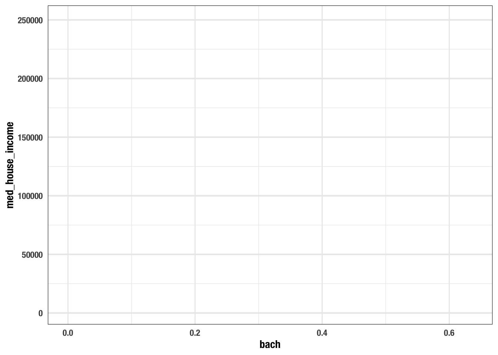

Chapter 3 Visual Analysis
3.1 Exploratory analysis
- https://r4ds.had.co.nz/explore-intro.html
- iteration
- this chapter focuses on visualization
- the process of exploratory anlaysis is naturally inductive
3.2 The American Community Survey
- we’ll work with data from the american community survey.
- this is data you will get really familiar with
- what is the acs and why do we love it?
- https://www.vox.com/explainers/2015/12/3/9845152/acs-survey-defunded
- random sample of individuals across the us
- random samples are used as they representative and statistically non-biased
- the information is used to determine funding
- tells us about age, ethnicity, country of origin, occupation, education, voting behavior, etc.
- this information is available in the decennial census (in the constitution)
- ACS tells us about rates rather than the actual number of people in a thing
- one of the major problems is that some populations are under-represented
What is the relationship between education and income?
we have a data frame loaded this is very similar to a table in excel each column is a variable
| med_house_income | less_than_hs | hs_grad | some_coll | bach | white | black |
| 1.06e+05 | 0.0252 | 0.196 | 0.221 | 0.325 | 0.897 | 0.0122 |
| 6.96e+04 | 0.0577 | 0.253 | 0.316 | 0.262 | 0.885 | 0.0171 |
| 7.07e+04 | 0.0936 | 0.173 | 0.273 | 0.267 | 0.733 | 0.0795 |
| 7.45e+04 | 0.0843 | 0.253 | 0.353 | 0.231 | 0.824 | 0.0306 |
| 5.29e+04 | 0.145 | 0.31 | 0.283 | 0.168 | 0.737 | 0.0605 |
| 6.41e+04 | 0.0946 | 0.294 | 0.317 | 0.192 | 0.966 | 0.00256 |
| 3.71e+04 | 0.253 | 0.394 | 0.235 | 0.101 | 0.711 | 0.077 |
| 8.78e+04 | 0.0768 | 0.187 | 0.185 | 0.272 | 0.759 | 0.031 |
| 9.74e+04 | 0.0625 | 0.254 | 0.227 | 0.284 | 0.969 | 0.0071 |
| 4.34e+04 | 0.207 | 0.362 | 0.262 | 0.124 | 0.46 | 0.105 |
| 6.71e+04 | 0.0717 | 0.352 | 0.222 | 0.237 | 0.942 | 0.00132 |
| 4.06e+04 | 0.145 | 0.335 | 0.27 | 0.179 | 0.603 | 0.17 |
| 6.4e+04 | 0.104 | 0.343 | 0.198 | 0.164 | 0.672 | 0.0824 |
| 9.15e+04 | 0.0337 | 0.203 | 0.263 | 0.305 | 0.865 | 0.00523 |
| 8.02e+04 | 0.0965 | 0.306 | 0.273 | 0.203 | 0.964 | 0 |
| 3.15e+04 | 0.134 | 0.363 | 0.344 | 0.105 | 0.803 | 0.0426 |
| 5.37e+04 | 0.166 | 0.332 | 0.233 | 0.153 | 0.496 | 0.109 |
| 1.11e+05 | 0.0548 | 0.152 | 0.185 | 0.312 | 0.605 | 0.0338 |
| 5.9e+04 | 0.037 | 0.268 | 0.248 | 0.232 | 0.852 | 0.073 |
| 8.98e+04 | 0.0737 | 0.297 | 0.247 | 0.235 | 0.921 | 0 |
| 7.46e+04 | 0.0389 | 0.224 | 0.213 | 0.208 | 0.902 | 0.0202 |
| 6.82e+04 | 0.0224 | 0.0909 | 0.129 | 0.313 | 0.836 | 0.0233 |
| 9.22e+04 | 0.0228 | 0.166 | 0.194 | 0.254 | 0.939 | 0.00548 |
| 4.16e+04 | 0.198 | 0.344 | 0.312 | 0.0797 | 0.511 | 0.0209 |
| 6.05e+04 | 0.0926 | 0.467 | 0.323 | 0.0827 | 0.783 | 0 |
| 7.44e+04 | 0.0667 | 0.361 | 0.283 | 0.183 | 0.959 | 0.00483 |
| 5.09e+04 | 0.172 | 0.245 | 0.304 | 0.197 | 0.8 | 0.00754 |
| 1.46e+04 | 0.453 | 0.277 | 0.217 | 0.0494 | 0.113 | 0.0853 |
| 3.49e+04 | 0.293 | 0.189 | 0.11 | 0.197 | 0.357 | 0.115 |
| 4.62e+04 | 0.224 | 0.346 | 0.259 | 0.122 | 0.891 | 0.0093 |
| 6.63e+04 | 0.157 | 0.292 | 0.247 | 0.232 | 0.914 | 0.00938 |
| 6.39e+04 | 0.131 | 0.366 | 0.348 | 0.0877 | 0.704 | 0.0802 |
| 2.66e+04 | 0.192 | 0.328 | 0.341 | 0.0764 | 0.599 | 0.0573 |
| 7.01e+04 | 0.0474 | 0.301 | 0.269 | 0.248 | 0.851 | 0.00304 |
| 7.78e+04 | 0.0642 | 0.206 | 0.338 | 0.237 | 0.882 | 0.00491 |
| 3.79e+04 | 0.277 | 0.33 | 0.279 | 0.0674 | 0.368 | 0.0391 |
| 1.64e+04 | 0.669 | 0.126 | 0.191 | 0.0111 | 0.0269 | 0.106 |
| 1.95e+04 | 0.473 | 0.26 | 0.207 | 0.0502 | 0.0169 | 0.104 |
| 5.39e+04 | 0.199 | 0.346 | 0.293 | 0.0878 | 0.262 | 0.331 |
| 5.14e+04 | 0.141 | 0.358 | 0.359 | 0.116 | 0.243 | 0.367 |
| 3.48e+04 | 0.0949 | 0.294 | 0.343 | 0.168 | 0.521 | 0.168 |
| 3.47e+04 | 0.281 | 0.356 | 0.223 | 0.0629 | 0.582 | 0.0225 |
| 5.09e+04 | 0.228 | 0.35 | 0.249 | 0.0853 | 0.316 | 0.213 |
| 7.6e+04 | 0.168 | 0.405 | 0.219 | 0.121 | 0.958 | 0.00339 |
| 8.2e+04 | 0.0701 | 0.374 | 0.331 | 0.153 | 0.969 | 0.0112 |
| 5.52e+04 | 0.0772 | 0.327 | 0.363 | 0.149 | 0.805 | 0.071 |
| 8.09e+04 | 0.069 | 0.194 | 0.258 | 0.229 | 0.869 | 0.0498 |
| 9.92e+04 | 0.0504 | 0.263 | 0.291 | 0.236 | 0.921 | 0.00666 |
| 7.57e+04 | 0.0793 | 0.247 | 0.322 | 0.184 | 0.885 | 0.0239 |
| 9.77e+04 | 0.0357 | 0.232 | 0.23 | 0.289 | 0.848 | 0.0924 |
| 5.34e+04 | 0.158 | 0.376 | 0.283 | 0.0896 | 0.856 | 0 |
| 4.22e+04 | 0.117 | 0.337 | 0.3 | 0.145 | 0.536 | 0.196 |
| 6.34e+04 | 0.0692 | 0.343 | 0.3 | 0.196 | 0.844 | 0.0224 |
| 6.68e+04 | 0.118 | 0.314 | 0.288 | 0.181 | 0.632 | 0.0936 |
| 3.13e+04 | 0.176 | 0.343 | 0.272 | 0.156 | 0.737 | 0.0117 |
| 9.01e+04 | 0.0709 | 0.271 | 0.282 | 0.214 | 0.902 | 0.0261 |
| 1.22e+04 | 0.409 | 0.147 | 0.376 | 0.0269 | 0.105 | 0.109 |
| 4.03e+04 | 0.0535 | 0.113 | 0.16 | 0.271 | 0.824 | 0.0162 |
| 4.94e+04 | 0.061 | 0.173 | 0.227 | 0.211 | 0.746 | 0.013 |
| 9.01e+04 | 0.0555 | 0.155 | 0.249 | 0.25 | 0.81 | 0.00544 |
| 8.55e+04 | 0.0667 | 0.311 | 0.339 | 0.208 | 0.9 | 0.000526 |
| 8.94e+04 | 0.0561 | 0.299 | 0.267 | 0.187 | 0.977 | 0 |
| 6.49e+04 | 0.0378 | 0.293 | 0.285 | 0.211 | 0.941 | 0.0151 |
| 7.87e+04 | 0.0863 | 0.275 | 0.244 | 0.22 | 0.938 | 0.00378 |
| 6.78e+04 | 0.0742 | 0.218 | 0.314 | 0.203 | 0.858 | 0.00761 |
| 1.06e+05 | 0.0719 | 0.0523 | 0.229 | 0.242 | 0.587 | 0.0741 |
| 1.08e+05 | 0.0302 | 0.185 | 0.259 | 0.272 | 0.926 | 0.00373 |
| 7.02e+04 | 0.0431 | 0.133 | 0.207 | 0.258 | 0.641 | 0.118 |
| 5.6e+04 | 0.083 | 0.309 | 0.322 | 0.153 | 0.903 | 0.0205 |
| 8.42e+04 | 0.0232 | 0.134 | 0.232 | 0.296 | 0.89 | 0.0281 |
| 4.18e+04 | 0.0924 | 0.402 | 0.31 | 0.114 | 0.843 | 0.00329 |
| 2.5e+03 | 0.141 | 0.115 | 0.372 | 0.286 | 0.701 | 0.0562 |
| 6.35e+04 | 0.0579 | 0.117 | 0.146 | 0.203 | 0.696 | 0.0705 |
| 5.21e+04 | 0.0704 | 0.224 | 0.141 | 0.254 | 0.783 | 0.0232 |
| 7.06e+04 | 0.0457 | 0.114 | 0.16 | 0.269 | 0.677 | 0.0802 |
| 5.66e+04 | 0.0523 | 0.329 | 0.267 | 0.232 | 0.823 | 0.0585 |
| 5.46e+04 | 0.0787 | 0.446 | 0.244 | 0.163 | 0.934 | 0.00613 |
| 8.07e+04 | 0 | 0 | 0 | 0.381 | 0.658 | 0.0755 |
| 4.66e+04 | 0.0327 | 0.284 | 0.255 | 0.258 | 0.925 | 0.0171 |
| 4.49e+04 | 0.0409 | 0.112 | 0.125 | 0.231 | 0.746 | 0.0254 |
| 6.51e+04 | 0.0263 | 0.357 | 0.246 | 0.21 | 0.962 | 0.0172 |
| 1.16e+05 | 0.0746 | 0.214 | 0.309 | 0.252 | 0.666 | 0.0759 |
| 1.03e+05 | 0.0196 | 0.117 | 0.298 | 0.293 | 0.968 | 0.0173 |
| 7.15e+04 | 0.0111 | 0.185 | 0.237 | 0.295 | 0.846 | 0.0618 |
| 7.68e+04 | 0.0756 | 0.262 | 0.253 | 0.218 | 0.689 | 0.108 |
| 1.68e+04 | 0.323 | 0.312 | 0.249 | 0.0888 | 0.268 | 0.00622 |
| 8.66e+04 | 0.129 | 0.298 | 0.308 | 0.183 | 0.816 | 0.025 |
| 6.96e+04 | 0.0704 | 0.261 | 0.294 | 0.227 | 0.948 | 0 |
| 3.02e+04 | 0.32 | 0.347 | 0.261 | 0.037 | 0.133 | 0.304 |
| 9.43e+04 | 0.0505 | 0.248 | 0.23 | 0.291 | 0.894 | 0.00605 |
| 1.41e+05 | 0.0222 | 0.156 | 0.118 | 0.378 | 0.958 | 0.00311 |
| 7.61e+04 | 0.0401 | 0.327 | 0.349 | 0.209 | 0.95 | 0.00498 |
| 7.21e+04 | 0.102 | 0.348 | 0.374 | 0.127 | 0.549 | 0.264 |
| 5.14e+04 | 0.189 | 0.343 | 0.311 | 0.132 | 0.357 | 0.305 |
| 9.65e+04 | 0.0601 | 0.3 | 0.331 | 0.24 | 0.908 | 0.0107 |
| 1.36e+05 | 0.0196 | 0.0966 | 0.179 | 0.385 | 0.981 | 0.00171 |
| 1.03e+05 | 0.018 | 0.134 | 0.251 | 0.374 | 0.943 | 0.0026 |
| 1.17e+05 | 0.0377 | 0.181 | 0.273 | 0.314 | 0.955 | 0.00326 |
| 7.83e+04 | 0.0251 | 0.162 | 0.421 | 0.256 | 0.981 | 0.000957 |
| 1.1e+05 | 0.00993 | 0.136 | 0.241 | 0.376 | 0.945 | 0.0175 |
| 1.43e+05 | 0.0122 | 0.0777 | 0.132 | 0.39 | 0.982 | 0.000894 |
| 9.55e+04 | 0.0223 | 0.266 | 0.262 | 0.338 | 0.925 | 0.00834 |
| 7.03e+04 | 0.121 | 0.372 | 0.328 | 0.0962 | 0.398 | 0.372 |
| 9.04e+04 | 0.0251 | 0.315 | 0.372 | 0.176 | 0.901 | 0.0593 |
| 7.8e+04 | 0.0483 | 0.381 | 0.298 | 0.175 | 0.938 | 0.0267 |
| 6.13e+04 | 0.0557 | 0.266 | 0.361 | 0.205 | 0.911 | 0.0132 |
| 1.57e+04 | 0.342 | 0.242 | 0.306 | 0.0957 | 0.231 | 0.516 |
| 4.52e+04 | 0.283 | 0.343 | 0.248 | 0.0976 | 0.14 | 0.553 |
| 7.56e+04 | 0.095 | 0.375 | 0.277 | 0.181 | 0.547 | 0.334 |
| 1.05e+05 | 0.0378 | 0.184 | 0.185 | 0.343 | 0.944 | 0.00797 |
| 1.5e+05 | 0.018 | 0.131 | 0.176 | 0.417 | 0.954 | 0 |
| 3.81e+04 | 0.23 | 0.381 | 0.273 | 0.0965 | 0.182 | 0.538 |
| 3.29e+04 | 0.315 | 0.296 | 0.228 | 0.106 | 0.29 | 0.525 |
| 4.41e+04 | 0.169 | 0.325 | 0.353 | 0.115 | 0.388 | 0.39 |
| 5.73e+04 | 0.0712 | 0.422 | 0.23 | 0.174 | 0.888 | 0.0427 |
| 8.74e+04 | 0.0512 | 0.346 | 0.281 | 0.21 | 0.958 | 0.00962 |
| 8.19e+04 | 0.0546 | 0.262 | 0.313 | 0.266 | 0.85 | 0.0811 |
| 7.35e+04 | 0.125 | 0.399 | 0.294 | 0.12 | 0.593 | 0.216 |
| 5.4e+04 | 0.163 | 0.284 | 0.296 | 0.187 | 0.464 | 0.348 |
| 7.71e+04 | 0.0642 | 0.244 | 0.328 | 0.265 | 0.955 | 0 |
| 1.05e+05 | 0.0471 | 0.202 | 0.323 | 0.315 | 0.932 | 0.00267 |
| 5.31e+04 | 0.117 | 0.314 | 0.297 | 0.169 | 0.367 | 0.415 |
| 4.66e+04 | 0.192 | 0.337 | 0.315 | 0.132 | 0.392 | 0.388 |
| 4.1e+04 | 0.239 | 0.383 | 0.266 | 0.0877 | 0.416 | 0.331 |
| 8.12e+04 | 0.0902 | 0.335 | 0.291 | 0.214 | 0.694 | 0.195 |
| 1e+05 | 0.08 | 0.274 | 0.243 | 0.283 | 0.93 | 0.0125 |
| 1.03e+05 | 0.0721 | 0.258 | 0.24 | 0.263 | 0.945 | 0.00787 |
| 7.69e+04 | 0.032 | 0.367 | 0.349 | 0.136 | 0.928 | 0.0478 |
| 6.82e+04 | 0.0493 | 0.213 | 0.348 | 0.306 | 0.872 | 0.0298 |
| 8.16e+04 | 0.0601 | 0.352 | 0.259 | 0.242 | 0.885 | 0.00768 |
| 6.86e+04 | 0.0876 | 0.297 | 0.347 | 0.206 | 0.966 | 0 |
| 9.57e+04 | 0.0693 | 0.281 | 0.33 | 0.249 | 0.942 | 0.00375 |
| 7.93e+04 | 0.0488 | 0.286 | 0.366 | 0.176 | 0.831 | 0.00347 |
| 7.93e+04 | 0.0519 | 0.377 | 0.278 | 0.173 | 0.909 | 0.0209 |
| 7.49e+04 | 0.048 | 0.303 | 0.312 | 0.218 | 0.856 | 0.0586 |
| 1.01e+05 | 0.0272 | 0.274 | 0.344 | 0.241 | 0.945 | 0.000165 |
| 6.01e+04 | 0.0425 | 0.344 | 0.36 | 0.143 | 0.838 | 0.0251 |
| 1.06e+05 | 0.0664 | 0.33 | 0.298 | 0.175 | 0.843 | 0.0576 |
| 6.15e+04 | 0.0634 | 0.326 | 0.309 | 0.215 | 0.893 | 0.0213 |
| 5.81e+04 | 0.12 | 0.36 | 0.345 | 0.097 | 0.958 | 0.0286 |
| 1.04e+05 | 0.0416 | 0.253 | 0.279 | 0.231 | 0.948 | 0 |
| 5.44e+04 | 0.225 | 0.309 | 0.256 | 0.127 | 0.302 | 0.522 |
| 7.51e+04 | 0.107 | 0.389 | 0.192 | 0.188 | 0.743 | 0.0369 |
| 1.33e+05 | 0.019 | 0.167 | 0.183 | 0.4 | 0.917 | 0.0113 |
| 1.11e+05 | 0.0558 | 0.184 | 0.26 | 0.317 | 0.908 | 0 |
| 1.09e+05 | 0.039 | 0.258 | 0.211 | 0.322 | 0.875 | 0.0226 |
| 7.67e+04 | 0.0687 | 0.301 | 0.361 | 0.177 | 0.899 | 0.0252 |
| 1.39e+05 | 0.037 | 0.159 | 0.23 | 0.31 | 0.927 | 0 |
| 1.05e+05 | 0.0346 | 0.268 | 0.251 | 0.247 | 0.882 | 0.0277 |
| 7.32e+04 | 0.0236 | 0.261 | 0.247 | 0.3 | 0.909 | 0.0186 |
| 1.21e+05 | 0.0422 | 0.315 | 0.254 | 0.198 | 0.893 | 0.0103 |
| 9.94e+04 | 0.0634 | 0.151 | 0.216 | 0.348 | 0.677 | 0.0545 |
| 9.58e+04 | 0.0838 | 0.372 | 0.258 | 0.191 | 0.949 | 0.0072 |
| 5.37e+04 | 0.156 | 0.336 | 0.283 | 0.134 | 0.61 | 0.056 |
| 6.26e+04 | 0.144 | 0.348 | 0.268 | 0.129 | 0.646 | 0.0366 |
| 3.85e+04 | 0.198 | 0.431 | 0.216 | 0.108 | 0.42 | 0.0115 |
| 4.2e+04 | 0.364 | 0.291 | 0.167 | 0.123 | 0.203 | 0.126 |
| 1.26e+05 | 0.0761 | 0.26 | 0.31 | 0.26 | 0.943 | 0.0377 |
| 1.04e+05 | 0.118 | 0.304 | 0.242 | 0.234 | 0.78 | 0.0321 |
| 9.57e+04 | 0.0911 | 0.353 | 0.232 | 0.217 | 0.814 | 0.0346 |
| 1.45e+05 | 0.00354 | 0.13 | 0.18 | 0.349 | 0.91 | 0.000142 |
| 9.07e+04 | 0.0841 | 0.257 | 0.291 | 0.25 | 0.867 | 0.0404 |
| 1.29e+05 | 0.0221 | 0.142 | 0.166 | 0.379 | 0.873 | 0.0122 |
| 2.1e+05 | 0.0113 | 0.0636 | 0.0588 | 0.321 | 0.815 | 0.0171 |
| 1.42e+05 | 0.0143 | 0.123 | 0.174 | 0.397 | 0.951 | 0.00116 |
| 1e+05 | 0.0574 | 0.228 | 0.256 | 0.297 | 0.929 | 0.02 |
| 1.73e+05 | 0.0119 | 0.0484 | 0.0976 | 0.277 | 0.644 | 0 |
| 1.06e+05 | 0.0523 | 0.178 | 0.208 | 0.285 | 0.732 | 0.0547 |
| 7.82e+04 | 0.0671 | 0.192 | 0.196 | 0.302 | 0.709 | 0.0388 |
| 8.47e+04 | 0.077 | 0.156 | 0.131 | 0.286 | 0.789 | 0.0167 |
| 1.06e+05 | 0.0516 | 0.112 | 0.181 | 0.274 | 0.617 | 0.0395 |
| 9.83e+04 | 0.066 | 0.171 | 0.201 | 0.253 | 0.902 | 0.0234 |
| 1.03e+05 | 0.0435 | 0.181 | 0.159 | 0.398 | 0.86 | 0.0462 |
| 1.52e+05 | 0.00687 | 0.123 | 0.16 | 0.327 | 0.83 | 0.0366 |
| 8.04e+04 | 0.061 | 0.251 | 0.274 | 0.208 | 0.652 | 0.0956 |
| 1.27e+05 | 0.0476 | 0.109 | 0.203 | 0.38 | 0.955 | 0.00199 |
| 7.92e+04 | 0.0678 | 0.203 | 0.248 | 0.318 | 0.881 | 0.0441 |
| 1.31e+05 | 0.0406 | 0.169 | 0.19 | 0.304 | 0.924 | 0.00541 |
| 7.44e+04 | 0.0666 | 0.267 | 0.242 | 0.273 | 0.673 | 0.0875 |
| 6.39e+04 | 0.157 | 0.301 | 0.229 | 0.199 | 0.468 | 0.136 |
| 8.96e+04 | 0.0971 | 0.209 | 0.234 | 0.248 | 0.776 | 0.033 |
| 1.04e+05 | 0.0368 | 0.0669 | 0.0928 | 0.391 | 0.875 | 0.0412 |
| 1.03e+05 | 0.0429 | 0.0788 | 0.0902 | 0.413 | 0.791 | 0.00348 |
| 6.49e+04 | 0.0796 | 0.0837 | 0.0621 | 0.395 | 0.614 | 0.108 |
| 6.5e+04 | 0.0205 | 0.0262 | 0.0612 | 0.334 | 0.655 | 0.0291 |
| 4.42e+04 | 0.0553 | 0.0581 | 0.0618 | 0.313 | 0.547 | 0.0668 |
| 7.1e+04 | 0.00232 | 0.0228 | 0.0646 | 0.335 | 0.699 | 0.0533 |
| 8.66e+04 | 0.0346 | 0.143 | 0.0919 | 0.263 | 0.588 | 0.165 |
| 8.8e+04 | 0.0278 | 0.133 | 0.154 | 0.244 | 0.679 | 0.0119 |
| 1.53e+05 | 0.0514 | 0.0656 | 0.123 | 0.297 | 0.788 | 0 |
| 9.38e+04 | 0.029 | 0.221 | 0.214 | 0.304 | 0.909 | 0.0552 |
| 1.78e+05 | 0.013 | 0.0685 | 0.096 | 0.359 | 0.863 | 0 |
| 1.31e+05 | 0.0254 | 0.0843 | 0.128 | 0.341 | 0.826 | 0.00374 |
| 5.76e+04 | 0.194 | 0.184 | 0.168 | 0.272 | 0.465 | 0.0448 |
| 6.2e+04 | 0.165 | 0.287 | 0.203 | 0.175 | 0.579 | 0.0541 |
| 7.16e+04 | 0.0678 | 0.225 | 0.175 | 0.249 | 0.563 | 0.149 |
| 8.02e+04 | 0.087 | 0.202 | 0.197 | 0.253 | 0.723 | 0.0317 |
| 2.04e+05 | 0.00878 | 0.0323 | 0.0439 | 0.309 | 0.808 | 0.0183 |
| 1.14e+05 | 0.0351 | 0.122 | 0.252 | 0.328 | 0.875 | 0.0122 |
| 1.01e+05 | 0.0299 | 0.0828 | 0.169 | 0.296 | 0.736 | 0.00884 |
| 1.71e+05 | 0.0238 | 0.0517 | 0.0772 | 0.354 | 0.84 | 0 |
| 1.27e+05 | 0.0132 | 0.106 | 0.217 | 0.282 | 0.78 | 0.029 |
| 1.39e+05 | 0.025 | 0.0988 | 0.12 | 0.335 | 0.906 | 0.0118 |
| 1.56e+05 | 0.0176 | 0.0899 | 0.0835 | 0.304 | 0.829 | 0.0137 |
| 1.34e+05 | 0.00994 | 0.0652 | 0.166 | 0.364 | 0.771 | 0.0114 |
| 9.68e+04 | 0.0469 | 0.234 | 0.255 | 0.201 | 0.866 | 0.0282 |
| 1.24e+05 | 0.0457 | 0.262 | 0.235 | 0.209 | 0.697 | 0.114 |
| 1.72e+05 | 0.004 | 0.0514 | 0.0749 | 0.251 | 0.771 | 0.0186 |
| 1.37e+05 | 0.00296 | 0.0242 | 0.0873 | 0.312 | 0.704 | 0.012 |
| 1.18e+05 | 0.0226 | 0.168 | 0.178 | 0.264 | 0.757 | 0.0299 |
| 1.96e+05 | 0.0166 | 0.0582 | 0.07 | 0.264 | 0.734 | 0.0438 |
| 1.27e+05 | 0.0204 | 0.0818 | 0.122 | 0.354 | 0.671 | 0.0599 |
| 2.11e+05 | 0.0296 | 0.0513 | 0.077 | 0.31 | 0.764 | 0.0204 |
| 1.17e+05 | 0.0562 | 0.156 | 0.0944 | 0.258 | 0.732 | 0.0105 |
| 5.88e+04 | 0.134 | 0.247 | 0.195 | 0.257 | 0.672 | 0.0627 |
| 8.35e+04 | 0.0343 | 0.197 | 0.159 | 0.305 | 0.802 | 0.0585 |
| 8.08e+04 | 0.0345 | 0.0727 | 0.058 | 0.32 | 0.659 | 0.02 |
| 1.16e+05 | 0.0153 | 0.0205 | 0.0446 | 0.299 | 0.787 | 0.0248 |
| 1.66e+05 | 0.0171 | 0.069 | 0.0942 | 0.297 | 0.69 | 0 |
| 1.19e+05 | 0.0347 | 0.0725 | 0.152 | 0.309 | 0.754 | 0.0339 |
| 1.76e+05 | 0.00771 | 0.0997 | 0.115 | 0.368 | 0.829 | 0.0144 |
| 1.86e+05 | 0.0135 | 0.11 | 0.0798 | 0.296 | 0.787 | 0.017 |
| 1.57e+05 | 0.0146 | 0.064 | 0.143 | 0.352 | 0.742 | 0.0547 |
| 1.19e+05 | 0.0212 | 0.189 | 0.188 | 0.331 | 0.839 | 0.0226 |
| 1.12e+05 | 0.0562 | 0.0973 | 0.152 | 0.308 | 0.817 | 0.0135 |
| 1.03e+05 | 0.0254 | 0.172 | 0.118 | 0.356 | 0.798 | 0.0225 |
| 4.38e+04 | 0.115 | 0.29 | 0.225 | 0.203 | 0.433 | 0.0582 |
| 1.96e+05 | 0.0021 | 0.0583 | 0.0922 | 0.343 | 0.862 | 0.0051 |
| 7.43e+04 | 0.107 | 0.255 | 0.235 | 0.218 | 0.484 | 0.161 |
| 6.58e+04 | 0.0714 | 0.35 | 0.202 | 0.24 | 0.607 | 0.176 |
| 3.92e+04 | 0.221 | 0.312 | 0.258 | 0.124 | 0.366 | 0.262 |
| 7.16e+04 | 0.149 | 0.164 | 0.162 | 0.351 | 0.657 | 0.131 |
| 1.58e+05 | 0.012 | 0.0172 | 0.0464 | 0.227 | 0.884 | 0.0167 |
| 5.96e+04 | 0.104 | 0.216 | 0.165 | 0.23 | 0.336 | 0.368 |
| 9.3e+04 | 0.0828 | 0.0951 | 0.0943 | 0.269 | 0.621 | 0.124 |
| 1.14e+05 | 0.00821 | 0.105 | 0.126 | 0.277 | 0.749 | 0.0284 |
| 7.43e+04 | 0.0475 | 0.12 | 0.209 | 0.274 | 0.742 | 0.00476 |
| 1.65e+05 | 0.022 | 0.0395 | 0.0682 | 0.257 | 0.626 | 0.00674 |
| 1.24e+05 | 0.0264 | 0.0883 | 0.0906 | 0.299 | 0.696 | 0.0141 |
| 1.16e+05 | 0.0185 | 0.0957 | 0.162 | 0.327 | 0.604 | 0.0416 |
| 6.37e+04 | 0.175 | 0.332 | 0.169 | 0.166 | 0.44 | 0.0678 |
| 9.51e+04 | 0.095 | 0.207 | 0.155 | 0.216 | 0.712 | 0.0235 |
| 9.22e+04 | 0.0757 | 0.165 | 0.187 | 0.361 | 0.842 | 0.0135 |
| 1.41e+05 | 0.0322 | 0.118 | 0.212 | 0.341 | 0.881 | 0.00767 |
| 7.62e+04 | 0.111 | 0.212 | 0.185 | 0.266 | 0.624 | 0.122 |
| 9.53e+04 | 0.0302 | 0.242 | 0.166 | 0.338 | 0.859 | 0.0143 |
| 4.16e+04 | 0.11 | 0.23 | 0.161 | 0.254 | 0.402 | 0.133 |
| 5.99e+04 | 0.201 | 0.331 | 0.232 | 0.139 | 0.295 | 0.258 |
| 5.68e+04 | 0.19 | 0.319 | 0.249 | 0.156 | 0.439 | 0.244 |
| 7.3e+04 | 0.0733 | 0.225 | 0.124 | 0.374 | 0.621 | 0.0553 |
| 7.86e+04 | 0.0297 | 0.022 | 0.0633 | 0.459 | 0.78 | 0.0185 |
| 1.17e+05 | 0.0594 | 0.0631 | 0.171 | 0.341 | 0.777 | 0.0751 |
| 2.61e+04 | 0.128 | 0.267 | 0.24 | 0.282 | 0.402 | 0.165 |
| 1.26e+05 | 0.0501 | 0.0943 | 0.13 | 0.39 | 0.894 | 0.0122 |
| 3.03e+04 | 0.28 | 0.315 | 0.273 | 0.104 | 0.0271 | 0.64 |
| 2.74e+04 | 0.275 | 0.349 | 0.255 | 0.104 | 0.0143 | 0.547 |
| 6.24e+04 | 0.204 | 0.218 | 0.183 | 0.271 | 0.541 | 0.0553 |
| 8.38e+04 | 0.148 | 0.219 | 0.208 | 0.244 | 0.379 | 0.281 |
| 5.14e+04 | 0.138 | 0.331 | 0.361 | 0.0955 | 0.0133 | 0.787 |
| 5.96e+04 | 0.242 | 0.356 | 0.254 | 0.0861 | 0.00713 | 0.767 |
| 1.08e+05 | 0.0437 | 0.175 | 0.203 | 0.291 | 0.841 | 0.0373 |
| 7.5e+04 | 0.121 | 0.276 | 0.281 | 0.203 | 0.297 | 0.455 |
| 6.12e+04 | 0.122 | 0.333 | 0.292 | 0.178 | 0.204 | 0.485 |
| 8.19e+04 | 0.0595 | 0.253 | 0.272 | 0.259 | 0.758 | 0.0215 |
| 3.12e+04 | 0.287 | 0.343 | 0.214 | 0.123 | 0.151 | 0.45 |
| 8.4e+04 | 0.0783 | 0.111 | 0.165 | 0.391 | 0.609 | 0.0761 |
| 1.09e+05 | 0.0518 | 0.213 | 0.196 | 0.316 | 0.885 | 0.0197 |
| 1.28e+05 | 0.00858 | 0.0502 | 0.0617 | 0.33 | 0.738 | 0.0487 |
| 1.1e+05 | 0.0507 | 0.237 | 0.194 | 0.305 | 0.692 | 0.0272 |
| 7.02e+04 | 0.135 | 0.409 | 0.175 | 0.189 | 0.457 | 0.0868 |
| 1.13e+05 | 0.0334 | 0.129 | 0.185 | 0.414 | 0.92 | 0.0117 |
| 1.7e+05 | 0.0123 | 0.0797 | 0.102 | 0.293 | 0.729 | 0.0168 |
| 8.24e+04 | 0.082 | 0.0981 | 0.16 | 0.275 | 0.605 | 0.117 |
| 1.03e+05 | 0.0204 | 0.0567 | 0.087 | 0.297 | 0.76 | 0.0609 |
| 1.24e+05 | 0.0152 | 0.0535 | 0.104 | 0.311 | 0.774 | 0.0406 |
| 1.79e+05 | 0.0353 | 0.0914 | 0.118 | 0.234 | 0.637 | 0.00764 |
| 9.76e+04 | 0.0823 | 0.247 | 0.237 | 0.203 | 0.78 | 0.0447 |
| 9.21e+04 | 0.0261 | 0.153 | 0.134 | 0.363 | 0.744 | 0.034 |
| 9.35e+04 | 0.00838 | 0.038 | 0.0927 | 0.25 | 0.812 | 0.0212 |
| 9.66e+04 | 0.0306 | 0.222 | 0.142 | 0.334 | 0.79 | 0.0221 |
| 6.68e+04 | 0.088 | 0.21 | 0.232 | 0.219 | 0.841 | 0.0304 |
| 7.16e+04 | 0.143 | 0.291 | 0.263 | 0.114 | 0.425 | 0.0955 |
| 6.88e+04 | 0.091 | 0.343 | 0.241 | 0.234 | 0.699 | 0.0162 |
| 9.14e+04 | 0.0741 | 0.253 | 0.267 | 0.219 | 0.935 | 0 |
| 7.9e+04 | 0.0954 | 0.238 | 0.238 | 0.254 | 0.911 | 0.0189 |
| 3.81e+04 | 0.324 | 0.363 | 0.171 | 0.122 | 0.245 | 0.0346 |
| 1.52e+05 | 0.036 | 0.0948 | 0.146 | 0.363 | 0.8 | 0.0146 |
| 7.43e+04 | 0.144 | 0.164 | 0.155 | 0.279 | 0.599 | 0.0276 |
| 5.71e+04 | 0.203 | 0.243 | 0.191 | 0.247 | 0.722 | 0.00726 |
| 1.38e+05 | 0.0304 | 0.0834 | 0.111 | 0.351 | 0.781 | 0.0357 |
| 1.44e+05 | 0.00839 | 0.0603 | 0.0686 | 0.197 | 0.754 | 0.0278 |
| 6.47e+04 | 0.163 | 0.329 | 0.244 | 0.168 | 0.338 | 0.448 |
| 7.52e+04 | 0.154 | 0.188 | 0.198 | 0.274 | 0.624 | 0.0504 |
| 9.05e+04 | 0.0779 | 0.302 | 0.183 | 0.325 | 0.642 | 0.108 |
| 8.82e+04 | 0.0575 | 0.364 | 0.251 | 0.232 | 0.834 | 0.0233 |
| 9.39e+04 | 0.0328 | 0.274 | 0.278 | 0.266 | 0.953 | 0.00678 |
| 1.25e+05 | 0.022 | 0.0579 | 0.0931 | 0.237 | 0.741 | 0.0299 |
| 1.15e+05 | 0.0483 | 0.195 | 0.128 | 0.287 | 0.766 | 0.0448 |
| 1.54e+05 | 0.0172 | 0.0363 | 0.133 | 0.293 | 0.775 | 0.0436 |
| 1.37e+05 | 0.00118 | 0.0937 | 0.132 | 0.363 | 0.872 | 0.0187 |
| 1.01e+05 | 0.0401 | 0.302 | 0.288 | 0.238 | 0.956 | 0.0015 |
| 4.47e+04 | 0.316 | 0.407 | 0.171 | 0.0822 | 0.403 | 0.0934 |
| 1.01e+05 | 0.053 | 0.361 | 0.285 | 0.226 | 0.959 | 0.00175 |
| 9.48e+04 | 0.0656 | 0.215 | 0.158 | 0.327 | 0.926 | 0.0157 |
| 8.21e+04 | 0.053 | 0.112 | 0.092 | 0.332 | 0.656 | 0.15 |
| 1.32e+05 | 0.0173 | 0.0912 | 0.0989 | 0.325 | 0.932 | 0.00156 |
| 5.77e+04 | 0.229 | 0.306 | 0.246 | 0.12 | 0.382 | 0.0606 |
| 6.2e+04 | 0.102 | 0.268 | 0.264 | 0.222 | 0.834 | 0.0209 |
| 9.17e+04 | 0.0758 | 0.0955 | 0.198 | 0.304 | 0.844 | 0.0752 |
| 7.04e+04 | 0.154 | 0.171 | 0.105 | 0.207 | 0.657 | 0.0856 |
| 4.54e+04 | 0.08 | 0.291 | 0.458 | 0.139 | 0.799 | 0.0732 |
| 4.67e+04 | 0.0865 | 0.374 | 0.321 | 0.117 | 0.817 | 0.0511 |
| 7.97e+04 | 0.0588 | 0.269 | 0.26 | 0.252 | 0.903 | 0.0215 |
| 2.2e+04 | 0.209 | 0.338 | 0.3 | 0.116 | 0.754 | 0.136 |
| 6.15e+04 | 0.0653 | 0.356 | 0.367 | 0.136 | 0.984 | 0 |
| 5.44e+04 | 0.08 | 0.262 | 0.248 | 0.201 | 0.921 | 0.0131 |
| 2.12e+04 | 0.209 | 0.311 | 0.305 | 0.104 | 0.705 | 0.0575 |
| 6.08e+04 | 0.0701 | 0.385 | 0.357 | 0.11 | 0.97 | 0.00508 |
| 6.66e+04 | 0.109 | 0.274 | 0.315 | 0.153 | 0.901 | 0.0129 |
| 7.4e+04 | 0.0859 | 0.35 | 0.228 | 0.16 | 0.984 | 0 |
| 3.73e+04 | 0.141 | 0.405 | 0.29 | 0.0911 | 0.899 | 0.0122 |
| 7.6e+04 | 0.0325 | 0.224 | 0.316 | 0.264 | 0.956 | 0.0186 |
| 4.12e+04 | 0.132 | 0.362 | 0.322 | 0.109 | 0.936 | 0.0255 |
| 5.42e+04 | 0.128 | 0.309 | 0.275 | 0.209 | 0.981 | 0 |
| 6.14e+04 | 0.071 | 0.442 | 0.235 | 0.172 | 0.988 | 0.000581 |
| 5.67e+04 | 0.124 | 0.433 | 0.248 | 0.131 | 0.909 | 0.0291 |
| 8.76e+04 | 0.0991 | 0.192 | 0.201 | 0.337 | 0.757 | 0.0627 |
| 7.39e+04 | 0.0472 | 0.322 | 0.304 | 0.213 | 0.96 | 0.00116 |
| 7.19e+04 | 0.036 | 0.2 | 0.217 | 0.254 | 0.961 | 0.00599 |
| 6.96e+04 | 0.0737 | 0.311 | 0.275 | 0.161 | 0.967 | 0.00493 |
| 7.4e+04 | 0.0999 | 0.328 | 0.266 | 0.215 | 0.277 | 0.495 |
| 1.41e+05 | 0.0107 | 0.143 | 0.217 | 0.394 | 0.858 | 0.0185 |
| 8.79e+04 | 0.14 | 0.237 | 0.288 | 0.257 | 0.797 | 0.12 |
| 1.09e+05 | 0.0709 | 0.231 | 0.273 | 0.247 | 0.803 | 0.112 |
| 1.66e+05 | 0.0104 | 0.0707 | 0.135 | 0.395 | 0.913 | 0.0295 |
| 1.48e+05 | 0.0269 | 0.0623 | 0.087 | 0.354 | 0.663 | 0.0421 |
| 1.22e+05 | 0.0198 | 0.103 | 0.226 | 0.321 | 0.693 | 0.0346 |
| 1.18e+05 | 0.0283 | 0.188 | 0.204 | 0.323 | 0.776 | 0.0482 |
| 1.12e+05 | 0.052 | 0.167 | 0.224 | 0.251 | 0.506 | 0.365 |
| 9.1e+04 | 0.0777 | 0.289 | 0.236 | 0.225 | 0.794 | 0.05 |
| 1.03e+05 | 0.0413 | 0.233 | 0.235 | 0.261 | 0.888 | 0.0118 |
| 8.86e+04 | 0.0447 | 0.29 | 0.288 | 0.252 | 0.882 | 0.026 |
| 7.78e+04 | 0.0656 | 0.315 | 0.259 | 0.251 | 0.824 | 0.0252 |
| 1.1e+05 | 0.0958 | 0.278 | 0.269 | 0.215 | 0.721 | 0.18 |
| 7.1e+04 | 0.0283 | 0.0355 | 0.0426 | 0.31 | 0.589 | 0.0316 |
| 9.91e+04 | 0.0771 | 0.204 | 0.229 | 0.326 | 0.847 | 0.0382 |
| 1.17e+05 | 0.054 | 0.188 | 0.197 | 0.324 | 0.863 | 0.0261 |
| 1.31e+05 | 0.0181 | 0.119 | 0.132 | 0.412 | 0.895 | 0.00131 |
| 7e+04 | 0.111 | 0.236 | 0.212 | 0.269 | 0.506 | 0.0407 |
| 6.82e+04 | 0.175 | 0.288 | 0.206 | 0.224 | 0.499 | 0.0133 |
| 6.62e+04 | 0.0736 | 0.316 | 0.289 | 0.213 | 0.733 | 0.0794 |
| 9.08e+04 | 0.0562 | 0.245 | 0.282 | 0.221 | 0.776 | 0.00167 |
| 7.45e+04 | 0.152 | 0.258 | 0.246 | 0.256 | 0.416 | 0.327 |
| 7.26e+04 | 0.118 | 0.271 | 0.3 | 0.203 | 0.397 | 0.369 |
| 8.14e+04 | 0.0736 | 0.175 | 0.31 | 0.267 | 0.741 | 0.123 |
| 7.19e+04 | 0.0548 | 0.304 | 0.307 | 0.244 | 0.8 | 0.0774 |
| 5.91e+04 | 0.0594 | 0.252 | 0.371 | 0.207 | 0.825 | 0.0636 |
| 4.7e+04 | 0.128 | 0.352 | 0.236 | 0.196 | 0.808 | 0.029 |
| 8.51e+04 | 0.0924 | 0.293 | 0.28 | 0.198 | 0.635 | 0.17 |
| 1e+05 | 0.0197 | 0.0468 | 0.0862 | 0.291 | 0.806 | 0.00661 |
| 1.74e+05 | 0.0195 | 0.0966 | 0.1 | 0.319 | 0.889 | 0.000147 |
| 1.2e+05 | 0.0247 | 0.182 | 0.133 | 0.299 | 0.771 | 0.0422 |
| 1.84e+05 | 0.0241 | 0.0724 | 0.0975 | 0.257 | 0.754 | 0.044 |
| 7.65e+04 | 0.0398 | 0.203 | 0.257 | 0.201 | 0.871 | 0.0493 |
| 8.1e+04 | 0.0263 | 0.209 | 0.26 | 0.285 | 0.898 | 0.00656 |
| 6.85e+04 | 0.0369 | 0.21 | 0.22 | 0.276 | 0.934 | 0.02 |
| 6.06e+04 | 0.105 | 0.458 | 0.217 | 0.123 | 0.985 | 0 |
| 6.22e+04 | 0.0525 | 0.374 | 0.232 | 0.19 | 0.982 | 0 |
| 7.38e+04 | 0.0688 | 0.288 | 0.205 | 0.245 | 0.95 | 0.0117 |
| 6.25e+04 | 0.0668 | 0.254 | 0.304 | 0.216 | 0.878 | 0.0291 |
| 8.48e+04 | 0.0333 | 0.0822 | 0.103 | 0.364 | 0.722 | 0.0723 |
| 8.94e+04 | 0.0684 | 0.106 | 0.13 | 0.255 | 0.558 | 0.0777 |
| 7.7e+04 | 0.107 | 0.294 | 0.318 | 0.175 | 0.377 | 0.313 |
| 6.97e+04 | 0.0274 | 0.105 | 0.107 | 0.428 | 0.689 | 0.0175 |
| 6.46e+04 | 0.0886 | 0.15 | 0.151 | 0.406 | 0.633 | 0.0232 |
| 8.87e+04 | 0.0561 | 0.124 | 0.0815 | 0.561 | 0.838 | 0.0112 |
| 1.08e+05 | 0.00676 | 0.0555 | 0.1 | 0.504 | 0.86 | 0.000778 |
| 5.84e+04 | 0.153 | 0.224 | 0.149 | 0.249 | 0.537 | 0.137 |
| 5.23e+04 | 0.425 | 0.26 | 0.144 | 0.133 | 0.201 | 0.0325 |
| 1.73e+04 | 0.392 | 0.244 | 0.23 | 0.0796 | 0.326 | 0.118 |
| 6.62e+04 | 0.392 | 0.279 | 0.117 | 0.137 | 0.251 | 0.0577 |
| 1.12e+05 | 0.037 | 0.0796 | 0.0836 | 0.356 | 0.764 | 0.0171 |
| 1.18e+05 | 0.145 | 0.12 | 0.0694 | 0.303 | 0.542 | 0.0371 |
| 7.95e+04 | 0.0386 | 0.11 | 0.129 | 0.312 | 0.647 | 0.164 |
| 5.41e+04 | 0.0491 | 0.158 | 0.0826 | 0.329 | 0.655 | 0.0732 |
| 3.8e+04 | 0.152 | 0.164 | 0.27 | 0.272 | 0.317 | 0.424 |
| 2.98e+04 | 0.272 | 0.258 | 0.274 | 0.12 | 0.041 | 0.536 |
| 3.09e+04 | 0.214 | 0.323 | 0.329 | 0.112 | 0.0156 | 0.611 |
| 4.52e+04 | 0.257 | 0.327 | 0.266 | 0.126 | 0.0125 | 0.757 |
| 5.01e+04 | 0.321 | 0.31 | 0.153 | 0.103 | 0.214 | 0.0733 |
| 5.26e+04 | 0.398 | 0.353 | 0.137 | 0.0895 | 0.0645 | 0.0129 |
| 4.75e+04 | 0.128 | 0.46 | 0.191 | 0.138 | 0.512 | 0.121 |
| 5.76e+04 | 0.0214 | 0.0758 | 0.137 | 0.401 | 0.764 | 0.0214 |
| 1.39e+05 | 0.0292 | 0.07 | 0.125 | 0.442 | 0.855 | 0.0273 |
| 6.73e+04 | 0.153 | 0.293 | 0.162 | 0.246 | 0.585 | 0.00621 |
| 1.03e+05 | 0.0965 | 0.15 | 0.0652 | 0.462 | 0.846 | 0.00206 |
| 2.18e+04 | 0.454 | 0.169 | 0.0491 | 0.177 | 0.339 | 0.00999 |
| 3.61e+04 | 0.161 | 0.288 | 0.253 | 0.173 | 0.02 | 0.685 |
| 1.39e+05 | 0.0125 | 0.0311 | 0.0822 | 0.415 | 0.832 | 0.0431 |
| 1.77e+04 | 0.351 | 0.226 | 0.215 | 0.163 | 0.1 | 0.401 |
| 2.38e+04 | 0.202 | 0.283 | 0.305 | 0.138 | 0.0121 | 0.65 |
| 7.75e+04 | 0.134 | 0.231 | 0.118 | 0.376 | 0.549 | 0.0486 |
| 5.37e+04 | 0.208 | 0.366 | 0.26 | 0.101 | 0.0672 | 0.622 |
| 9.07e+04 | 0.0771 | 0.109 | 0.149 | 0.404 | 0.634 | 0.0668 |
| 5.82e+04 | 0.0405 | 0.0851 | 0.115 | 0.386 | 0.598 | 0.0815 |
| 5.12e+04 | 0.0884 | 0.0766 | 0.0898 | 0.384 | 0.579 | 0.0814 |
| 8.93e+04 | 0.0807 | 0.0743 | 0.111 | 0.547 | 0.896 | 0.00874 |
| 5.67e+04 | 0.346 | 0.285 | 0.116 | 0.146 | 0.347 | 0.0168 |
| 9.71e+04 | 0.0497 | 0.125 | 0.181 | 0.282 | 0.582 | 0.229 |
| 2.73e+04 | 0.236 | 0.205 | 0.22 | 0.221 | 0.215 | 0.159 |
| 3.62e+04 | 0.221 | 0.278 | 0.302 | 0.126 | 0.0528 | 0.651 |
| 5.1e+04 | 0.206 | 0.468 | 0.237 | 0.0378 | 0.0461 | 0.662 |
| 3.92e+04 | 0.242 | 0.35 | 0.283 | 0.0962 | 0.023 | 0.76 |
| 4e+04 | 0.182 | 0.326 | 0.343 | 0.103 | 0.0334 | 0.743 |
| 8.51e+04 | 0.0873 | 0.251 | 0.186 | 0.232 | 0.529 | 0.137 |
| 1e+05 | 0.0321 | 0.157 | 0.157 | 0.298 | 0.825 | 0.0191 |
| 6.97e+04 | 0.056 | 0.295 | 0.211 | 0.188 | 0.771 | 0.026 |
| 7.07e+04 | 0.137 | 0.329 | 0.302 | 0.154 | 0.0875 | 0.704 |
| 8.05e+04 | 0.0803 | 0.13 | 0.145 | 0.445 | 0.752 | 0.0513 |
| 7.25e+04 | 0.141 | 0.239 | 0.116 | 0.324 | 0.547 | 0.0566 |
| 7.25e+04 | 0.13 | 0.129 | 0.214 | 0.325 | 0.574 | 0.0628 |
| 1.02e+05 | 0.0819 | 0.199 | 0.0824 | 0.4 | 0.669 | 0.0534 |
| 3.94e+04 | 0.133 | 0.167 | 0.146 | 0.312 | 0.579 | 0.0521 |
| 9.08e+04 | 0.0262 | 0.0682 | 0.0884 | 0.35 | 0.709 | 0.0972 |
| 1.51e+05 | 0.024 | 0.0904 | 0.127 | 0.48 | 0.931 | 0 |
| 1.08e+05 | 0.108 | 0.12 | 0.0507 | 0.415 | 0.795 | 0.0327 |
| 5.71e+04 | 0.255 | 0.304 | 0.14 | 0.186 | 0.375 | 0.00937 |
| 4.86e+04 | 0.169 | 0.403 | 0.21 | 0.128 | 0.499 | 0.0328 |
| 1.04e+05 | 0.0426 | 0.157 | 0.115 | 0.516 | 0.93 | 0.0214 |
| 1.91e+04 | 0.389 | 0.334 | 0.207 | 0.0662 | 0.138 | 0.367 |
| 3.2e+04 | 0.145 | 0.338 | 0.226 | 0.218 | 0.0901 | 0.525 |
| 3.98e+04 | 0.305 | 0.316 | 0.217 | 0.117 | 0.0794 | 0.606 |
| 5.23e+04 | 0.271 | 0.346 | 0.221 | 0.108 | 0.102 | 0.424 |
| 4.75e+04 | 0.183 | 0.397 | 0.257 | 0.134 | 0.592 | 0.0648 |
| 6.18e+04 | 0.235 | 0.376 | 0.26 | 0.0975 | 0.52 | 0.0389 |
| 1.08e+05 | 0.0351 | 0.039 | 0.0697 | 0.391 | 0.762 | 0.0618 |
| 8.4e+04 | 0.069 | 0.141 | 0.172 | 0.275 | 0.778 | 0.0134 |
| 7.4e+04 | 0.0972 | 0.278 | 0.299 | 0.224 | 0.325 | 0.309 |
| 5.86e+04 | 0.178 | 0.213 | 0.266 | 0.22 | 0.511 | 0.0921 |
| 5.53e+04 | 0.154 | 0.439 | 0.245 | 0.105 | 0.595 | 0.0517 |
| 6.9e+04 | 0.167 | 0.396 | 0.2 | 0.144 | 0.663 | 0.0546 |
| 7.34e+04 | 0.0652 | 0.384 | 0.262 | 0.207 | 0.878 | 0.0079 |
| 8.15e+04 | 0.0327 | 0.21 | 0.202 | 0.348 | 0.821 | 0.00593 |
| 7.26e+04 | 0.0403 | 0.341 | 0.318 | 0.182 | 0.927 | 0.00332 |
| 6.96e+04 | 0.14 | 0.275 | 0.228 | 0.198 | 0.249 | 0.378 |
| 3.12e+04 | 0.282 | 0.316 | 0.202 | 0.174 | 0.107 | 0.516 |
| 4.07e+04 | 0.379 | 0.265 | 0.219 | 0.0771 | 0.0317 | 0.516 |
| 7.68e+04 | 0.0764 | 0.216 | 0.188 | 0.316 | 0.495 | 0.292 |
| 5.01e+04 | 0.156 | 0.0933 | 0.123 | 0.374 | 0.667 | 0.0129 |
| 3.62e+04 | 0.025 | 0.144 | 0.0923 | 0.365 | 0.702 | 0.0586 |
| 5.59e+04 | 0.413 | 0.311 | 0.0874 | 0.117 | 0.218 | 0.00554 |
| 3.92e+04 | 0.147 | 0.264 | 0.31 | 0.231 | 0.0226 | 0.645 |
| 2.37e+04 | 0.265 | 0.361 | 0.208 | 0.113 | 0.12 | 0.333 |
| 5.13e+04 | 0.0875 | 0.173 | 0.124 | 0.303 | 0.518 | 0.112 |
| 4.38e+04 | 0.182 | 0.314 | 0.269 | 0.141 | 0.188 | 0.375 |
| 5.12e+04 | 0.218 | 0.307 | 0.281 | 0.126 | 0.144 | 0.602 |
| 6.76e+04 | 0.108 | 0.264 | 0.305 | 0.196 | 0.236 | 0.526 |
| 5.99e+04 | 0.141 | 0.223 | 0.28 | 0.206 | 0.377 | 0.321 |
| 3.64e+04 | 0.2 | 0.483 | 0.265 | 0.0444 | 0.0342 | 0.686 |
| 4.85e+04 | 0.246 | 0.373 | 0.228 | 0.103 | 0.0726 | 0.5 |
| 2.78e+04 | 0.215 | 0.381 | 0.291 | 0.101 | 0.0288 | 0.708 |
| 6.45e+04 | 0.151 | 0.304 | 0.228 | 0.212 | 0.284 | 0.411 |
| 7.76e+04 | 0.125 | 0.309 | 0.172 | 0.287 | 0.897 | 0.0254 |
| 4.6e+04 | 0.235 | 0.332 | 0.325 | 0.0613 | 0.0432 | 0.825 |
| 1.07e+05 | 0.0314 | 0.16 | 0.19 | 0.299 | 0.853 | 0.0387 |
| 1.51e+05 | 0.0211 | 0.0713 | 0.0781 | 0.506 | 0.822 | 0.018 |
| 6.11e+04 | 0.148 | 0.104 | 0.108 | 0.277 | 0.493 | 0.204 |
| 3.18e+04 | 0.24 | 0.385 | 0.247 | 0.107 | 0.00418 | 0.639 |
| 9.15e+04 | 0.0309 | 0.0529 | 0.0524 | 0.561 | 0.932 | 0 |
| 3.1e+04 | 0.121 | 0.151 | 0.186 | 0.287 | 0.461 | 0.1 |
| 1.91e+04 | 0.23 | 0.373 | 0.224 | 0.102 | 0.0443 | 0.621 |
| 1.12e+05 | 0.0927 | 0.151 | 0.151 | 0.417 | 0.956 | 0.003 |
| 3.88e+04 | 0.27 | 0.295 | 0.202 | 0.137 | 0.0332 | 0.597 |
| 7.59e+04 | 0.0804 | 0.2 | 0.121 | 0.335 | 0.352 | 0.116 |
| 7.79e+04 | 0.0606 | 0.323 | 0.302 | 0.147 | 0.934 | 0.0115 |
| 6.04e+04 | 0.0458 | 0.275 | 0.317 | 0.25 | 0.95 | 0.00391 |
| 8.43e+04 | 0.0504 | 0.266 | 0.253 | 0.236 | 0.953 | 0.01 |
| 5.93e+04 | 0.12 | 0.308 | 0.274 | 0.194 | 0.92 | 0.0128 |
| 7.85e+04 | 0.0873 | 0.0963 | 0.161 | 0.224 | 0.784 | 0.0369 |
| 7.69e+04 | 0.0639 | 0.19 | 0.153 | 0.266 | 0.769 | 0.0597 |
| 4.24e+04 | 0.132 | 0.331 | 0.274 | 0.155 | 0.949 | 0.00218 |
| 6.95e+04 | 0.0425 | 0.185 | 0.239 | 0.264 | 0.905 | 0.0188 |
| 2.85e+04 | 0.204 | 0.347 | 0.173 | 0.168 | 0.883 | 0.0279 |
| 3.12e+04 | 0.176 | 0.339 | 0.321 | 0.0882 | 0.728 | 0.0863 |
| 5.61e+04 | 0.11 | 0.29 | 0.207 | 0.161 | 0.806 | 0.0376 |
| 8.69e+04 | 0.0367 | 0.219 | 0.276 | 0.261 | 0.902 | 0.0195 |
| 7.39e+04 | 0.147 | 0.267 | 0.306 | 0.186 | 0.914 | 0.0533 |
| 6.68e+04 | 0.0821 | 0.322 | 0.34 | 0.181 | 0.884 | 0.0449 |
| 8.96e+04 | 0.0633 | 0.322 | 0.304 | 0.192 | 0.986 | 0.000302 |
| 4.32e+04 | 0.287 | 0.352 | 0.225 | 0.0741 | 0.771 | 0.00557 |
| 3.05e+04 | 0.285 | 0.443 | 0.231 | 0.0412 | 0.513 | 0.159 |
| 4.4e+04 | 0.336 | 0.28 | 0.264 | 0.0738 | 0.801 | 0.0448 |
| 4.7e+04 | 0.198 | 0.403 | 0.254 | 0.107 | 0.787 | 0.0513 |
| 9.14e+04 | 0.0993 | 0.222 | 0.237 | 0.241 | 0.942 | 0.0195 |
| 8.81e+04 | 0.085 | 0.372 | 0.292 | 0.17 | 0.966 | 0.000574 |
| 5.31e+04 | 0.257 | 0.318 | 0.257 | 0.11 | 0.707 | 0.0358 |
| 3.35e+04 | 0.381 | 0.428 | 0.134 | 0.0496 | 0.568 | 0.0444 |
| 3.6e+04 | 0.275 | 0.362 | 0.233 | 0.0789 | 0.447 | 0.0365 |
| 1.06e+05 | 0.0456 | 0.204 | 0.225 | 0.352 | 0.843 | 0.0574 |
| 5.26e+04 | 0.165 | 0.29 | 0.328 | 0.132 | 0.492 | 0.0895 |
| 1.39e+05 | 0.0138 | 0.108 | 0.198 | 0.33 | 0.876 | 0.0221 |
| 1e+05 | 0.0252 | 0.193 | 0.249 | 0.36 | 0.927 | 0.00184 |
| 6.25e+04 | 0.0674 | 0.341 | 0.393 | 0.146 | 0.764 | 0.1 |
| 7.16e+04 | 0.0243 | 0.291 | 0.331 | 0.23 | 0.742 | 0.115 |
| 1.24e+05 | 0.0328 | 0.128 | 0.249 | 0.369 | 0.891 | 0 |
| 9.86e+04 | 0.0704 | 0.293 | 0.304 | 0.212 | 0.925 | 0.0106 |
| 9.83e+04 | 0.0385 | 0.0966 | 0.076 | 0.316 | 0.641 | 0.0719 |
| 1.63e+05 | 0.00743 | 0.081 | 0.143 | 0.378 | 0.937 | 0 |
| 1.05e+05 | 0.0384 | 0.265 | 0.33 | 0.219 | 0.913 | 0.03 |
| 1.03e+05 | 0.0447 | 0.245 | 0.244 | 0.296 | 0.85 | 0.0127 |
| 8.74e+04 | 0.0499 | 0.146 | 0.159 | 0.311 | 0.789 | 0.0254 |
| 7.87e+04 | 0.0551 | 0.323 | 0.275 | 0.255 | 0.849 | 0.0228 |
| 7.13e+04 | 0.198 | 0.245 | 0.202 | 0.22 | 0.363 | 0.0375 |
| 1.4e+05 | 0.0171 | 0.117 | 0.133 | 0.392 | 0.977 | 0.00131 |
| 1.61e+05 | 0.0305 | 0.0954 | 0.151 | 0.332 | 0.809 | 0.00699 |
| 6.85e+04 | 0.065 | 0.434 | 0.281 | 0.189 | 0.949 | 0.000385 |
| 5.98e+04 | 0.0755 | 0.353 | 0.295 | 0.183 | 0.618 | 0.108 |
| 7.98e+04 | 0.0568 | 0.343 | 0.273 | 0.172 | 0.977 | 0.00787 |
| 5.42e+04 | 0.13 | 0.289 | 0.305 | 0.213 | 0.92 | 0.00714 |
| 5.39e+04 | 0.123 | 0.382 | 0.212 | 0.196 | 0.38 | 0.21 |
| 1.05e+05 | 0.0212 | 0.213 | 0.236 | 0.323 | 0.889 | 0.000668 |
| 1.02e+05 | 0.0499 | 0.25 | 0.282 | 0.271 | 0.923 | 0 |
| 6.26e+04 | 0.0666 | 0.36 | 0.305 | 0.204 | 0.974 | 0.00579 |
| 7.19e+04 | 0.0774 | 0.291 | 0.315 | 0.196 | 0.928 | 0.00863 |
| 3.07e+04 | 0.289 | 0.361 | 0.268 | 0.0576 | 0.403 | 0.0231 |
| 4.73e+04 | 0.161 | 0.457 | 0.236 | 0.108 | 0.976 | 0.00869 |
| 5.71e+04 | 0.119 | 0.296 | 0.399 | 0.109 | 0.833 | 0.0115 |
| 6.75e+04 | 0.0996 | 0.3 | 0.375 | 0.162 | 0.962 | 0.000123 |
| 6.02e+04 | 0.112 | 0.334 | 0.357 | 0.147 | 0.92 | 0.00937 |
| 5.07e+04 | 0.238 | 0.415 | 0.236 | 0.0659 | 0.546 | 0.0108 |
| 1.52e+05 | 0.0128 | 0.132 | 0.181 | 0.362 | 0.902 | 0.00368 |
| 6.97e+04 | 0.151 | 0.318 | 0.224 | 0.237 | 0.87 | 0.0153 |
| 2.63e+04 | 0.387 | 0.298 | 0.257 | 0.0551 | 0.524 | 0.0667 |
| 6.28e+04 | 0.104 | 0.204 | 0.221 | 0.218 | 0.918 | 0.007 |
| 6.25e+04 | 0.128 | 0.315 | 0.348 | 0.162 | 0.611 | 0.0888 |
| 8.82e+04 | 0.0704 | 0.205 | 0.293 | 0.299 | 0.843 | 0.0427 |
| 7.77e+04 | 0.0825 | 0.275 | 0.28 | 0.224 | 0.904 | 0.0152 |
| 2.59e+04 | 0.411 | 0.301 | 0.221 | 0.061 | 0.683 | 0.0531 |
| 4.65e+04 | 0.175 | 0.483 | 0.156 | 0.112 | 0.905 | 0.0757 |
| 2.39e+04 | 0.348 | 0.361 | 0.2 | 0.0522 | 0.625 | 0.109 |
| 4.81e+04 | 0.168 | 0.38 | 0.203 | 0.187 | 0.801 | 0.00264 |
| 1.33e+04 | 0.261 | 0.29 | 0.228 | 0.0572 | 0.639 | 0.0478 |
| 8.25e+04 | 0.0538 | 0.269 | 0.306 | 0.233 | 0.888 | 0.0491 |
| 1.27e+05 | 0.0405 | 0.183 | 0.256 | 0.289 | 0.906 | 0.0276 |
| 4.66e+04 | 0.194 | 0.363 | 0.263 | 0.117 | 0.847 | 0.0366 |
| 9.95e+04 | 0.105 | 0.307 | 0.267 | 0.215 | 0.953 | 0.00178 |
| 8.85e+04 | 0.0414 | 0.24 | 0.284 | 0.287 | 0.873 | 0.00656 |
| 9.23e+04 | 0.0744 | 0.211 | 0.339 | 0.255 | 0.915 | 0.00158 |
| 1.02e+05 | 0.0491 | 0.214 | 0.317 | 0.236 | 0.94 | 0.011 |
| 3.19e+04 | 0.338 | 0.318 | 0.238 | 0.0734 | 0.798 | 0.00948 |
| 3.75e+04 | 0.258 | 0.34 | 0.313 | 0.0525 | 0.906 | 0.0381 |
| 1.92e+04 | 0.438 | 0.308 | 0.216 | 0.0273 | 0.797 | 0.0119 |
| 2.99e+04 | 0.305 | 0.309 | 0.28 | 0.0707 | 0.761 | 0.0769 |
| 7.09e+04 | 0.099 | 0.367 | 0.299 | 0.115 | 0.975 | 0.00629 |
| 9.27e+04 | 0.144 | 0.306 | 0.304 | 0.138 | 0.974 | 0 |
| 3.72e+04 | 0.321 | 0.379 | 0.18 | 0.0698 | 0.865 | 0.00837 |
| 3.64e+04 | 0.254 | 0.361 | 0.238 | 0.0921 | 0.624 | 0.0911 |
| 5.31e+04 | 0.165 | 0.349 | 0.216 | 0.16 | 0.702 | 0.0305 |
| 4.06e+04 | 0.307 | 0.368 | 0.178 | 0.0969 | 0.683 | 0.0443 |
| 1.01e+05 | 0.0565 | 0.33 | 0.259 | 0.232 | 0.937 | 0.00783 |
| 8.37e+04 | 0.112 | 0.305 | 0.26 | 0.253 | 0.911 | 0.0372 |
| 9.29e+04 | 0.124 | 0.321 | 0.285 | 0.193 | 0.894 | 0.0252 |
| 5.33e+04 | 0.158 | 0.307 | 0.301 | 0.16 | 0.837 | 0.0562 |
| 9.71e+04 | 0.0344 | 0.156 | 0.247 | 0.371 | 0.918 | 0.0095 |
| 8.9e+04 | 0.0486 | 0.184 | 0.248 | 0.275 | 0.903 | 0.0327 |
| 5.93e+04 | 0.0883 | 0.207 | 0.237 | 0.268 | 0.741 | 0.154 |
| 2.37e+04 | 0.286 | 0.346 | 0.217 | 0.0896 | 0.311 | 0.191 |
| 2.35e+04 | 0.349 | 0.322 | 0.204 | 0.0989 | 0.325 | 0.141 |
| 1.26e+05 | 0.0282 | 0.238 | 0.264 | 0.312 | 0.936 | 0.00534 |
| 2.91e+04 | 0.192 | 0.429 | 0.279 | 0.0632 | 0.278 | 0.124 |
| 6.12e+04 | 0 | 0.227 | 0.114 | 0.636 | 0.77 | 0.0506 |
| 7.58e+04 | 0.0957 | 0.269 | 0.218 | 0.242 | 0.739 | 0.0533 |
| 1.02e+05 | 0.0658 | 0.24 | 0.292 | 0.309 | 0.941 | 0.00437 |
| 9.05e+04 | 0.101 | 0.316 | 0.301 | 0.193 | 0.949 | 0.000309 |
| 9.47e+04 | 0.0309 | 0.322 | 0.3 | 0.254 | 0.874 | 0.0047 |
| 4.18e+04 | 0.148 | 0.493 | 0.271 | 0.0542 | 0.858 | 0.00662 |
| 9.32e+04 | 0.0584 | 0.299 | 0.297 | 0.212 | 0.88 | 0.0299 |
| 9.56e+04 | 0.0312 | 0.132 | 0.292 | 0.29 | 0.885 | 0.0696 |
| 1.17e+05 | 0.0171 | 0.198 | 0.231 | 0.303 | 0.964 | 0.00941 |
| 6.99e+04 | 0.0382 | 0.182 | 0.21 | 0.31 | 0.851 | 0.0397 |
| 2.62e+04 | 0.258 | 0.259 | 0.173 | 0.177 | 0.531 | 0.148 |
| 4.94e+04 | 0.0664 | 0.256 | 0.257 | 0.241 | 0.67 | 0.116 |
| 1.26e+05 | 0.0291 | 0.153 | 0.187 | 0.349 | 0.823 | 0.023 |
| 8.98e+04 | 0.0279 | 0.309 | 0.236 | 0.297 | 0.76 | 0.00358 |
| 7.73e+04 | 0.074 | 0.334 | 0.282 | 0.209 | 0.825 | 0.00716 |
| 1.02e+05 | 0.0302 | 0.323 | 0.293 | 0.236 | 0.945 | 0.00636 |
| 3.3e+04 | 0.278 | 0.408 | 0.245 | 0.0494 | 0.469 | 0.00632 |
| 1.03e+05 | 0.0733 | 0.244 | 0.315 | 0.222 | 0.867 | 0.00981 |
| 1.28e+05 | 0.0106 | 0.131 | 0.246 | 0.277 | 0.925 | 0.00553 |
| 7.59e+04 | 0.151 | 0.335 | 0.237 | 0.159 | 0.764 | 0.0679 |
| 6.75e+04 | 0.118 | 0.294 | 0.296 | 0.191 | 0.788 | 0.00297 |
| 3.97e+04 | 0.233 | 0.444 | 0.235 | 0.0796 | 0.489 | 0.0876 |
| 4.28e+04 | 0.257 | 0.361 | 0.277 | 0.0716 | 0.746 | 0.0345 |
| 3.8e+04 | 0.209 | 0.241 | 0.322 | 0.138 | 0.546 | 0.111 |
| 4.03e+04 | 0.235 | 0.394 | 0.267 | 0.0469 | 0.41 | 0.076 |
| 9.09e+04 | 0.0185 | 0.111 | 0.243 | 0.274 | 0.879 | 0.00902 |
| 7.27e+04 | 0.13 | 0.294 | 0.267 | 0.187 | 0.941 | 0.0173 |
| 4.65e+04 | 0.222 | 0.362 | 0.316 | 0.0649 | 0.811 | 0.0271 |
| 4.27e+04 | 0.193 | 0.233 | 0.335 | 0.173 | 0.701 | 0.0336 |
| 3.76e+04 | 0.353 | 0.263 | 0.255 | 0.0969 | 0.524 | 0.0895 |
| 3.56e+04 | 0.196 | 0.377 | 0.292 | 0.11 | 0.568 | 0.0567 |
| 2.62e+04 | 0.456 | 0.242 | 0.176 | 0.0817 | 0.508 | 0.0732 |
| 5.86e+04 | 0.225 | 0.264 | 0.241 | 0.212 | 0.905 | 0.0295 |
| 6.38e+04 | 0.163 | 0.315 | 0.23 | 0.183 | 0.898 | 0.00924 |
| 4.86e+04 | 0.114 | 0.315 | 0.288 | 0.172 | 0.92 | 0.00435 |
| 7.33e+04 | 0.0819 | 0.286 | 0.25 | 0.237 | 0.968 | 0 |
| 2.66e+04 | 0.321 | 0.35 | 0.242 | 0.0733 | 0.489 | 0.0829 |
| 3.78e+04 | 0.425 | 0.317 | 0.199 | 0.0494 | 0.394 | 0.0128 |
| 4.86e+04 | 0.224 | 0.336 | 0.293 | 0.0928 | 0.395 | 0.128 |
| 5.94e+04 | 0.123 | 0.311 | 0.321 | 0.172 | 0.828 | 0.0432 |
| 9.12e+04 | 0.09 | 0.287 | 0.288 | 0.219 | 0.845 | 0.0137 |
| 8.53e+04 | 0.0905 | 0.304 | 0.259 | 0.214 | 0.981 | 0.00203 |
| 4.01e+04 | 0.247 | 0.356 | 0.226 | 0.101 | 0.868 | 0.0518 |
| 5.32e+04 | 0.124 | 0.351 | 0.304 | 0.17 | 0.903 | 0.000996 |
| 5.56e+04 | 0.196 | 0.399 | 0.256 | 0.104 | 0.894 | 0.000581 |
| 2.54e+04 | 0.286 | 0.198 | 0.273 | 0.141 | 0.298 | 0.205 |
| 3.12e+04 | 0.48 | 0.287 | 0.118 | 0.0781 | 0.416 | 0.0321 |
| 7.88e+04 | 0.151 | 0.278 | 0.27 | 0.179 | 0.96 | 0.00973 |
| 3.89e+04 | 0.22 | 0.352 | 0.303 | 0.0817 | 0.812 | 0.0487 |
| 3.25e+04 | 0.202 | 0.396 | 0.317 | 0.0658 | 0.714 | 0.0479 |
| 6.09e+04 | 0.149 | 0.383 | 0.316 | 0.0978 | 0.718 | 0.153 |
| 9.3e+04 | 0.0575 | 0.339 | 0.292 | 0.163 | 0.943 | 0.0265 |
| 8.02e+04 | 0.105 | 0.365 | 0.27 | 0.179 | 0.926 | 0.00463 |
| 1.13e+05 | 0.0466 | 0.194 | 0.315 | 0.282 | 0.864 | 0.0203 |
| 8.56e+04 | 0.0951 | 0.209 | 0.337 | 0.254 | 0.906 | 0.00317 |
| 6.73e+04 | 0.152 | 0.328 | 0.273 | 0.185 | 0.895 | 0.0591 |
| 4.21e+04 | 0.278 | 0.309 | 0.25 | 0.088 | 0.854 | 0 |
| 3.1e+04 | 0.311 | 0.39 | 0.208 | 0.0441 | 0.7 | 0.00774 |
| 4.49e+04 | 0.266 | 0.382 | 0.238 | 0.0801 | 0.837 | 0.0326 |
| 6.35e+04 | 0.18 | 0.271 | 0.284 | 0.192 | 0.963 | 0.00783 |
| 4.83e+04 | 0.162 | 0.376 | 0.236 | 0.178 | 0.567 | 0.169 |
| 6.19e+04 | 0.178 | 0.289 | 0.294 | 0.152 | 0.669 | 0.0789 |
| 4.95e+04 | 0.234 | 0.305 | 0.262 | 0.154 | 0.462 | 0.0301 |
| 5.8e+04 | 0.117 | 0.341 | 0.296 | 0.151 | 0.78 | 0.0387 |
| 7.31e+04 | 0.0661 | 0.334 | 0.26 | 0.194 | 0.964 | 0.0131 |
| 5.08e+04 | 0.136 | 0.369 | 0.34 | 0.097 | 0.663 | 0.0174 |
| 8.91e+04 | 0.0472 | 0.276 | 0.281 | 0.227 | 0.953 | 0.00315 |
| 7.36e+04 | 0.0751 | 0.336 | 0.252 | 0.216 | 0.901 | 0.049 |
| 5.45e+04 | 0.0956 | 0.411 | 0.272 | 0.139 | 0.884 | 0.037 |
| 6.42e+04 | 0.127 | 0.314 | 0.25 | 0.229 | 0.919 | 0.00998 |
| 5.17e+04 | 0.112 | 0.358 | 0.334 | 0.112 | 0.898 | 0.00723 |
| 6.96e+04 | 0.0805 | 0.359 | 0.29 | 0.18 | 0.798 | 0.00611 |
| 5.34e+04 | 0.132 | 0.363 | 0.325 | 0.126 | 0.712 | 0.0126 |
| 1.04e+05 | 0.127 | 0.232 | 0.269 | 0.253 | 0.852 | 0.0476 |
| 7.98e+04 | 0.0313 | 0.274 | 0.27 | 0.309 | 0.837 | 0 |
| 6.58e+04 | 0.0715 | 0.336 | 0.294 | 0.191 | 0.97 | 0.00679 |
| 7.72e+04 | 0.0491 | 0.254 | 0.177 | 0.3 | 0.8 | 0.114 |
| 2.28e+04 | 0.375 | 0.36 | 0.178 | 0.0495 | 0.291 | 0.084 |
| 2.41e+04 | 0.146 | 0.196 | 0.268 | 0.258 | 0.631 | 0.0933 |
| 7.95e+04 | 0.0656 | 0.291 | 0.266 | 0.242 | 0.888 | 0 |
| 8.33e+04 | 0.0884 | 0.375 | 0.223 | 0.187 | 0.888 | 0.00921 |
| 8.87e+04 | 0.0245 | 0.144 | 0.229 | 0.307 | 0.743 | 0.0748 |
| 5.29e+04 | 0.186 | 0.303 | 0.333 | 0.0866 | 0.692 | 0.0432 |
| 8.51e+04 | 0.0283 | 0.256 | 0.346 | 0.261 | 0.95 | 0.0135 |
| 7.77e+04 | 0.12 | 0.388 | 0.313 | 0.113 | 0.93 | 0.00467 |
| 7.07e+04 | 0.0651 | 0.333 | 0.32 | 0.15 | 0.945 | 0.0105 |
| 1e+05 | 0.0621 | 0.205 | 0.303 | 0.27 | 0.959 | 0.00198 |
| 1.73e+04 | 0.299 | 0.371 | 0.198 | 0.0642 | 0.516 | 0.023 |
| 7.31e+04 | 0.0757 | 0.41 | 0.268 | 0.138 | 0.966 | 0.00819 |
| 7.13e+04 | 0.116 | 0.294 | 0.256 | 0.203 | 0.818 | 0.0497 |
| 1.02e+05 | 0.046 | 0.21 | 0.254 | 0.288 | 0.916 | 0.0045 |
| 8.52e+04 | 0.0835 | 0.332 | 0.28 | 0.164 | 0.988 | 0.00149 |
| 6.29e+04 | 0.0725 | 0.272 | 0.26 | 0.223 | 0.831 | 0.0612 |
| 6.03e+04 | 0.0431 | 0.305 | 0.279 | 0.252 | 0.757 | 0.0678 |
| 7.72e+04 | 0.147 | 0.32 | 0.305 | 0.134 | 0.985 | 0.00217 |
| 6.69e+04 | 0.167 | 0.298 | 0.324 | 0.119 | 0.896 | 0.00854 |
| 5.57e+04 | 0.189 | 0.323 | 0.25 | 0.177 | 0.913 | 0.0225 |
| 6.62e+04 | 0.15 | 0.274 | 0.309 | 0.151 | 0.676 | 0.0681 |
| 2.25e+04 | 0.222 | 0.324 | 0.253 | 0.135 | 0.547 | 0.109 |
| 3.95e+04 | 0.39 | 0.261 | 0.246 | 0.0618 | 0.707 | 0.00947 |
| 1.03e+05 | 0.189 | 0.329 | 0.286 | 0.129 | 0.875 | 0.0282 |
| 8.67e+04 | 0.0222 | 0.227 | 0.244 | 0.253 | 0.869 | 0.0226 |
| 4.04e+04 | 0.267 | 0.314 | 0.299 | 0.0792 | 0.545 | 0.155 |
| 9.73e+04 | 0.0454 | 0.198 | 0.317 | 0.233 | 0.919 | 0.00607 |
| 3.67e+04 | 0.241 | 0.405 | 0.216 | 0.0818 | 0.772 | 0.0191 |
| 9.54e+04 | 0.0234 | 0.162 | 0.254 | 0.331 | 0.978 | 0.00954 |
| 5.16e+04 | 0.0374 | 0.382 | 0.296 | 0.212 | 0.843 | 0.0258 |
| 5.39e+04 | 0.113 | 0.365 | 0.303 | 0.16 | 0.871 | 0.0365 |
| 7.39e+04 | 0.0875 | 0.301 | 0.309 | 0.209 | 0.934 | 0.0171 |
| 7.66e+04 | 0.0522 | 0.221 | 0.209 | 0.257 | 0.893 | 0.0172 |
| 1.4e+05 | 0.0058 | 0.107 | 0.159 | 0.393 | 0.934 | 0.00333 |
| 1.02e+05 | 0.00945 | 0.145 | 0.177 | 0.326 | 0.932 | 0.00519 |
| 7.33e+04 | 0.036 | 0.457 | 0.282 | 0.155 | 0.936 | 0.0214 |
| 1.14e+05 | 0.0295 | 0.208 | 0.265 | 0.332 | 0.966 | 0.0106 |
| 9.4e+04 | 0.0498 | 0.271 | 0.336 | 0.224 | 0.906 | 0.0435 |
| 7.92e+04 | 0.0556 | 0.251 | 0.258 | 0.28 | 0.903 | 0.00218 |
| 3.65e+04 | 0.316 | 0.267 | 0.288 | 0.0724 | 0.163 | 0.54 |
| 4.77e+04 | 0.233 | 0.384 | 0.287 | 0.0855 | 0.172 | 0.583 |
| 8.3e+04 | 0.0785 | 0.363 | 0.274 | 0.181 | 0.943 | 0.0144 |
| 9.35e+04 | 0.0782 | 0.384 | 0.263 | 0.175 | 0.926 | 0.00836 |
| 9.73e+04 | 0.0866 | 0.354 | 0.334 | 0.157 | 0.928 | 0.00993 |
| 6.53e+04 | 0.104 | 0.43 | 0.256 | 0.141 | 0.77 | 0.0251 |
| 8.59e+04 | 0.0256 | 0.218 | 0.288 | 0.266 | 0.962 | 0.00016 |
| 1.28e+05 | 0.02 | 0.159 | 0.232 | 0.365 | 0.975 | 0.00131 |
| 7.59e+04 | 0.109 | 0.402 | 0.271 | 0.153 | 0.86 | 0.0216 |
| 1.19e+05 | 0.0107 | 0.127 | 0.176 | 0.422 | 0.985 | 0.00508 |
| 9.88e+04 | 0.0441 | 0.314 | 0.325 | 0.218 | 0.946 | 0.00682 |
| 4.44e+04 | 0.263 | 0.267 | 0.347 | 0.1 | 0.14 | 0.4 |
| 1.14e+05 | 0.0499 | 0.177 | 0.297 | 0.258 | 0.957 | 0.00344 |
| 1.04e+05 | 0.0753 | 0.317 | 0.261 | 0.251 | 0.568 | 0.288 |
| 8.83e+04 | 0.0331 | 0.345 | 0.304 | 0.218 | 0.971 | 0.00535 |
| 1.02e+05 | 0.0398 | 0.233 | 0.223 | 0.322 | 0.968 | 0 |
| 9.44e+04 | 0.0709 | 0.403 | 0.275 | 0.146 | 0.951 | 0.00233 |
| 7.06e+04 | 0.112 | 0.424 | 0.313 | 0.0574 | 0.501 | 0.24 |
| 9.57e+04 | 0.00874 | 0.1 | 0.139 | 0.416 | 0.942 | 0.00813 |
| 7.07e+04 | 0.024 | 0.203 | 0.229 | 0.332 | 0.955 | 0.00265 |
| 7.52e+04 | 0.0693 | 0.253 | 0.28 | 0.273 | 0.894 | 0.00794 |
| 8.88e+04 | 0.0158 | 0.141 | 0.248 | 0.332 | 0.962 | 0 |
| 7.63e+04 | 0.0245 | 0.218 | 0.28 | 0.253 | 0.963 | 0 |
| 8.12e+04 | 0.0564 | 0.306 | 0.277 | 0.247 | 0.927 | 0.0156 |
| 4.69e+04 | 0.155 | 0.336 | 0.304 | 0.162 | 0.492 | 0.185 |
| 3.2e+04 | 0.201 | 0.417 | 0.247 | 0.0879 | 0.39 | 0.0918 |
| 2.23e+04 | 0.277 | 0.405 | 0.167 | 0.102 | 0.406 | 0.11 |
| 7.45e+04 | 0.128 | 0.304 | 0.266 | 0.21 | 0.644 | 0.0915 |
| 4.51e+04 | 0.127 | 0.327 | 0.253 | 0.186 | 0.543 | 0.0952 |
| 4.52e+04 | 0.243 | 0.386 | 0.193 | 0.096 | 0.262 | 0.0381 |
| 9.26e+04 | 0.0324 | 0.215 | 0.219 | 0.356 | 0.945 | 0.000976 |
| 8.78e+04 | 0.0284 | 0.123 | 0.105 | 0.338 | 0.763 | 0.0103 |
| 6.41e+04 | 0.204 | 0.373 | 0.221 | 0.148 | 0.544 | 0.0363 |
| 1.38e+04 | 0.344 | 0.321 | 0.193 | 0.0533 | 0.406 | 0.0654 |
| 6.75e+04 | 0.126 | 0.376 | 0.219 | 0.2 | 0.684 | 0.082 |
| 1.08e+05 | 0.0158 | 0.0814 | 0.133 | 0.395 | 0.831 | 0.0167 |
| 4.63e+04 | 0.245 | 0.406 | 0.204 | 0.0869 | 0.443 | 0.121 |
| 5.61e+04 | 0.276 | 0.325 | 0.254 | 0.112 | 0.476 | 0.205 |
| 4.18e+04 | 0.137 | 0.401 | 0.323 | 0.105 | 0.0315 | 0.77 |
| 4.56e+04 | 0.275 | 0.308 | 0.255 | 0.125 | 0.0919 | 0.483 |
| 6.86e+04 | 0.0149 | 0.191 | 0.243 | 0.257 | 0.902 | 0.0584 |
| 6.14e+04 | 0.0401 | 0.222 | 0.299 | 0.264 | 0.936 | 0 |
| 8.09e+04 | 0.0249 | 0.231 | 0.351 | 0.249 | 0.958 | 0.0226 |
| 4.88e+04 | 0.00661 | 0.244 | 0.419 | 0.22 | 0.804 | 0.0352 |
| 7.36e+04 | 0.0263 | 0.156 | 0.246 | 0.322 | 0.889 | 0.0281 |
| 6.76e+04 | 0.102 | 0.272 | 0.263 | 0.218 | 0.82 | 0.0746 |
| 7.71e+04 | 0.0336 | 0.175 | 0.254 | 0.32 | 0.944 | 0.0196 |
| 8.21e+04 | 0.0556 | 0.181 | 0.271 | 0.3 | 0.953 | 0.00302 |
| 7.01e+04 | 0.0379 | 0.22 | 0.23 | 0.247 | 0.986 | 0 |
| 4.52e+04 | 0.0217 | 0.374 | 0.281 | 0.17 | 0.863 | 0.0685 |
| 9.98e+04 | 0.0512 | 0.161 | 0.289 | 0.255 | 0.956 | 0.0221 |
| 7.18e+04 | 0.0455 | 0.234 | 0.256 | 0.293 | 0.931 | 0 |
| 7.61e+04 | 0.0236 | 0.13 | 0.223 | 0.322 | 0.987 | 0.00179 |
| 7.64e+04 | 0.0419 | 0.252 | 0.33 | 0.215 | 0.954 | 0.00237 |
| 7.16e+04 | 0.0457 | 0.195 | 0.227 | 0.265 | 0.938 | 0.00187 |
| 8.87e+04 | 0.0198 | 0.147 | 0.234 | 0.321 | 0.978 | 0 |
| 9.57e+04 | 0.0256 | 0.2 | 0.296 | 0.301 | 0.955 | 0.000143 |
| 9e+04 | 0.0278 | 0.257 | 0.4 | 0.201 | 0.94 | 0 |
| 7.86e+04 | 0.0363 | 0.267 | 0.345 | 0.212 | 0.859 | 0.0183 |
| 9.07e+04 | 0.0511 | 0.189 | 0.244 | 0.279 | 0.948 | 0.00166 |
| 8.45e+04 | 0.0357 | 0.0985 | 0.138 | 0.277 | 0.954 | 0.00905 |
| 4.89e+04 | 0.0474 | 0.363 | 0.311 | 0.203 | 0.86 | 0.0781 |
| 6.75e+04 | 0.0223 | 0.235 | 0.27 | 0.285 | 0.897 | 0.0127 |
| 8.24e+04 | 0.0129 | 0.249 | 0.334 | 0.272 | 0.959 | 0 |
| 4.75e+04 | 0.0504 | 0.193 | 0.268 | 0.281 | 0.876 | 0.0169 |
| 6.98e+04 | 0.0102 | 0.146 | 0.215 | 0.393 | 0.981 | 0.00845 |
| 6.92e+04 | 0.0479 | 0.222 | 0.296 | 0.24 | 0.94 | 0.00469 |
| 7.14e+04 | 0.0253 | 0.26 | 0.326 | 0.212 | 0.916 | 0.01 |
| 6.91e+04 | 0.0804 | 0.363 | 0.282 | 0.158 | 0.898 | 0.0268 |
| 7.89e+04 | 0.0176 | 0.254 | 0.35 | 0.224 | 0.9 | 0.0219 |
| 8.68e+04 | 0.0151 | 0.204 | 0.245 | 0.335 | 0.934 | 0 |
| 4.84e+04 | 0.0181 | 0.199 | 0.291 | 0.311 | 0.9 | 0.0635 |
| 7.44e+04 | 0.0646 | 0.368 | 0.256 | 0.188 | 0.911 | 0.0421 |
| 3.82e+04 | 0.0669 | 0.255 | 0.241 | 0.216 | 0.804 | 0.0569 |
| 5.58e+04 | 0.0345 | 0.279 | 0.262 | 0.223 | 0.889 | 0.0309 |
| 6.37e+04 | 0.0285 | 0.219 | 0.363 | 0.224 | 0.969 | 0.01 |
| 6.61e+04 | 0.0331 | 0.207 | 0.337 | 0.226 | 0.873 | 0.0327 |
| 4.89e+04 | 0.0542 | 0.251 | 0.259 | 0.28 | 0.849 | 0.103 |
| 8.6e+04 | 0.0183 | 0.161 | 0.246 | 0.351 | 0.86 | 0.00903 |
| 7.54e+04 | 0.0325 | 0.266 | 0.289 | 0.272 | 0.896 | 0.00746 |
| 8.02e+04 | 0.0857 | 0.196 | 0.119 | 0.33 | 0.675 | 0.045 |
| 6.1e+04 | 0.143 | 0.317 | 0.247 | 0.176 | 0.576 | 0.0322 |
| 7.25e+04 | 0.0541 | 0.234 | 0.254 | 0.21 | 0.524 | 0.316 |
| 7.46e+04 | 0.0804 | 0.21 | 0.134 | 0.264 | 0.756 | 0.0786 |
| 6.69e+04 | 0.149 | 0.316 | 0.218 | 0.232 | 0.463 | 0.138 |
| 1.01e+05 | 0.0846 | 0.0928 | 0.0763 | 0.349 | 0.757 | 0.035 |
| 3.92e+04 | 0.103 | 0.26 | 0.106 | 0.272 | 0.682 | 0.166 |
| 4.62e+04 | 0.163 | 0.144 | 0.281 | 0.217 | 0.32 | 0.358 |
| 1.05e+05 | 0.0355 | 0.391 | 0.309 | 0.186 | 0.976 | 0.00347 |
| 6.13e+04 | 0.154 | 0.317 | 0.284 | 0.184 | 0.392 | 0.109 |
| 6.32e+04 | 0.0661 | 0.418 | 0.224 | 0.212 | 0.894 | 0.00581 |
| 1.14e+05 | 0.0476 | 0.325 | 0.305 | 0.191 | 0.913 | 0.0138 |
| 9.42e+04 | 0.0645 | 0.316 | 0.241 | 0.273 | 0.759 | 0.0585 |
| 9.29e+04 | 0.097 | 0.262 | 0.293 | 0.212 | 0.795 | 0.0527 |
| 1.28e+05 | 0.0182 | 0.136 | 0.194 | 0.319 | 0.772 | 0 |
| 1.24e+05 | 0.021 | 0.13 | 0.219 | 0.264 | 0.712 | 0.00774 |
| 5.83e+04 | 0.115 | 0.476 | 0.22 | 0.101 | 0.632 | 0.0981 |
| 1.44e+05 | 0.0207 | 0.112 | 0.176 | 0.34 | 0.871 | 0.00875 |
| 9.14e+04 | 0.0532 | 0.179 | 0.254 | 0.305 | 0.849 | 0.0105 |
| 8.55e+04 | 0.132 | 0.338 | 0.213 | 0.207 | 0.869 | 0.01 |
| 5.88e+04 | 0.258 | 0.408 | 0.219 | 0.0705 | 0.297 | 0.0276 |
| 2.46e+04 | 0.396 | 0.262 | 0.233 | 0.0666 | 0.389 | 0.165 |
| 3.15e+04 | 0.296 | 0.424 | 0.182 | 0.0615 | 0.382 | 0.0989 |
| 7.39e+04 | 0.112 | 0.255 | 0.226 | 0.187 | 0.847 | 0.00816 |
| 1e+05 | 0.0443 | 0.3 | 0.259 | 0.253 | 0.891 | 0 |
| 9.62e+04 | 0.0823 | 0.297 | 0.289 | 0.209 | 0.831 | 0.053 |
| 1.05e+05 | 0.0359 | 0.206 | 0.251 | 0.274 | 0.807 | 0 |
| 1.42e+05 | 0.0273 | 0.142 | 0.189 | 0.396 | 0.901 | 0 |
| 1.27e+05 | 0.0352 | 0.246 | 0.284 | 0.276 | 0.922 | 0.00838 |
| 6.21e+04 | 0.0885 | 0.388 | 0.195 | 0.151 | 0.73 | 0.0831 |
| 1.1e+05 | 0.0355 | 0.273 | 0.226 | 0.279 | 0.878 | 0.0146 |
| 7.96e+04 | 0.0665 | 0.266 | 0.21 | 0.212 | 0.882 | 0.0213 |
| 1.67e+05 | 0.0441 | 0.0779 | 0.115 | 0.237 | 0.789 | 0.0145 |
| 1.2e+05 | 0.0443 | 0.118 | 0.0842 | 0.363 | 0.792 | 0 |
| 1.33e+05 | 0.0183 | 0.136 | 0.143 | 0.304 | 0.853 | 0.0128 |
| 1.47e+05 | 0.0283 | 0.0948 | 0.173 | 0.261 | 0.823 | 0.00428 |
| 1.02e+05 | 0.0429 | 0.196 | 0.204 | 0.239 | 0.753 | 0.0118 |
| 6.72e+04 | 0.0815 | 0.408 | 0.29 | 0.167 | 0.837 | 0.00705 |
| 9.38e+04 | 0.0533 | 0.27 | 0.295 | 0.267 | 0.882 | 0.0117 |
| 8.73e+04 | 0.043 | 0.215 | 0.272 | 0.255 | 0.753 | 0.025 |
| 1.05e+05 | 0.0418 | 0.326 | 0.267 | 0.195 | 0.881 | 0.055 |
| 1.25e+05 | 0.0345 | 0.241 | 0.243 | 0.249 | 0.861 | 0.0021 |
| 7.55e+04 | 0.0478 | 0.327 | 0.24 | 0.24 | 0.86 | 0.061 |
| 9.91e+04 | 0.062 | 0.259 | 0.229 | 0.246 | 0.933 | 0.0126 |
| 6e+04 | 0.0497 | 0.185 | 0.335 | 0.192 | 0.714 | 0.0588 |
| 6.16e+04 | 0.0657 | 0.29 | 0.215 | 0.248 | 0.627 | 0.164 |
| 1.04e+05 | 0.0765 | 0.0664 | 0.0576 | 0.302 | 0.539 | 0.0601 |
| 1.05e+05 | 0.0521 | 0.0795 | 0.0916 | 0.269 | 0.587 | 0.0807 |
| 2.85e+04 | 0.197 | 0.26 | 0.232 | 0.167 | 0.491 | 0.0557 |
| 4.1e+04 | 0.197 | 0.452 | 0.222 | 0.0768 | 0.456 | 0.132 |
| 6.17e+04 | 0.133 | 0.345 | 0.297 | 0.117 | 0.484 | 0.0652 |
| 3.74e+04 | 0.218 | 0.436 | 0.188 | 0.141 | 0.451 | 0.0225 |
| 6.74e+04 | 0.172 | 0.347 | 0.219 | 0.168 | 0.737 | 0.0209 |
| 9.34e+04 | 0.103 | 0.387 | 0.293 | 0.126 | 0.806 | 0.0396 |
| 7.45e+04 | 0.0868 | 0.364 | 0.28 | 0.142 | 0.803 | 0.0674 |
| 1.04e+05 | 0.0587 | 0.338 | 0.267 | 0.205 | 0.937 | 0 |
| 1.01e+05 | 0.0403 | 0.335 | 0.322 | 0.204 | 0.937 | 0.0396 |
| 1.35e+05 | 0.029 | 0.173 | 0.22 | 0.289 | 0.888 | 0.00907 |
| 7.88e+04 | 0.045 | 0.285 | 0.271 | 0.207 | 0.805 | 0.0469 |
| 6.68e+04 | 0.0572 | 0.293 | 0.237 | 0.223 | 0.699 | 0.103 |
| 1.51e+05 | 0.0129 | 0.209 | 0.229 | 0.329 | 0.922 | 0.00353 |
| 8.74e+04 | 0.0504 | 0.227 | 0.224 | 0.243 | 0.707 | 0.106 |
| 7.94e+04 | 0.0704 | 0.22 | 0.253 | 0.283 | 0.87 | 0.0427 |
| 5.89e+04 | 0.203 | 0.387 | 0.24 | 0.125 | 0.397 | 0.244 |
| 9.69e+04 | 0.101 | 0.0963 | 0.0907 | 0.346 | 0.681 | 0.0597 |
| 1.08e+05 | 0.0287 | 0.0726 | 0.107 | 0.376 | 0.841 | 0.00902 |
| 6.44e+04 | 0.19 | 0.303 | 0.247 | 0.175 | 0.449 | 0.157 |
| 5.31e+04 | 0.181 | 0.36 | 0.286 | 0.116 | 0.414 | 0.232 |
| 6.76e+04 | 0.141 | 0.263 | 0.126 | 0.249 | 0.783 | 0.0876 |
| 1.24e+05 | 0.0257 | 0.105 | 0.0751 | 0.429 | 0.786 | 0.0452 |
| 1.31e+05 | 0.00248 | 0.0928 | 0.0889 | 0.408 | 0.86 | 0.0073 |
| 1.12e+05 | 0.0183 | 0.0317 | 0.0586 | 0.328 | 0.666 | 0.0584 |
| 7.85e+04 | 0.0649 | 0.288 | 0.298 | 0.227 | 0.912 | 0.000244 |
| 9.86e+04 | 0.0136 | 0.0379 | 0.0701 | 0.334 | 0.676 | 0.0496 |
| 1.31e+05 | 0.0251 | 0.109 | 0.129 | 0.304 | 0.79 | 0.0157 |
| 1.24e+05 | 0.0329 | 0.0573 | 0.0996 | 0.379 | 0.786 | 0.00939 |
| 1.43e+05 | 0.00542 | 0.101 | 0.145 | 0.357 | 0.857 | 0.00105 |
| 1.56e+05 | 0.0092 | 0.0761 | 0.0834 | 0.272 | 0.766 | 0 |
| 9.35e+04 | 0.00217 | 0.0835 | 0.349 | 0.267 | 0.652 | 0.00468 |
| 6.4e+04 | 0.0683 | 0.221 | 0.203 | 0.313 | 0.68 | 0.083 |
| 9.89e+04 | 0.036 | 0.104 | 0.0935 | 0.325 | 0.741 | 0.037 |
| 1.18e+05 | 0.0446 | 0.132 | 0.167 | 0.25 | 0.753 | 0.0608 |
| 2.15e+05 | 0 | 0.0327 | 0.0686 | 0.288 | 0.839 | 0.0148 |
| 1.56e+05 | 0.0146 | 0.0292 | 0.078 | 0.314 | 0.802 | 0.00887 |
| 1.2e+05 | 0.0565 | 0.166 | 0.142 | 0.263 | 0.704 | 0.0295 |
| 1.16e+05 | 0.0218 | 0.165 | 0.261 | 0.334 | 0.792 | 0.0243 |
| 1.22e+05 | 0.0381 | 0.197 | 0.163 | 0.302 | 0.842 | 0.0337 |
| 1.71e+05 | 0.0124 | 0.0763 | 0.0826 | 0.394 | 0.894 | 0.00372 |
| 8.55e+04 | 0.135 | 0.22 | 0.228 | 0.225 | 0.726 | 0.0245 |
| 1.01e+05 | 0.0856 | 0.264 | 0.251 | 0.278 | 0.871 | 0.0505 |
| 8.93e+04 | 0.0605 | 0.342 | 0.317 | 0.19 | 0.969 | 0 |
| 1.56e+05 | 0.0288 | 0.0739 | 0.151 | 0.372 | 0.827 | 0 |
| 8.7e+04 | 0.0666 | 0.226 | 0.271 | 0.248 | 0.936 | 0 |
| 1.22e+05 | 0.0597 | 0.25 | 0.245 | 0.289 | 0.897 | 0.0095 |
| 9.02e+04 | 0.0502 | 0.203 | 0.204 | 0.382 | 0.943 | 0.0137 |
| 1.14e+05 | 0.0397 | 0.206 | 0.195 | 0.341 | 0.853 | 0.00943 |
| 6.78e+04 | 0.107 | 0.372 | 0.243 | 0.176 | 0.843 | 0.0668 |
| 8.26e+04 | 0.105 | 0.259 | 0.335 | 0.226 | 0.89 | 0.00518 |
| 1.55e+05 | 0.0238 | 0.128 | 0.243 | 0.334 | 0.904 | 0 |
| 8.9e+04 | 0.0507 | 0.215 | 0.276 | 0.292 | 0.904 | 0.0128 |
| 5.69e+04 | 0.0725 | 0.224 | 0.252 | 0.243 | 0.958 | 0.00226 |
| 2.58e+04 | 0.523 | 0.29 | 0.165 | 0.0155 | 0.0269 | 0 |
| 2.24e+04 | 0.39 | 0.308 | 0.238 | 0.0407 | 0.0211 | 0.00735 |
| 1.85e+04 | 0.437 | 0.298 | 0.158 | 0.098 | 0.0456 | 0 |
| 6.66e+04 | 0.0852 | 0.372 | 0.223 | 0.21 | 0.735 | 0.015 |
| 1.66e+05 | 0.0173 | 0.0562 | 0.139 | 0.376 | 0.806 | 0.00974 |
| 1.68e+05 | 0.0249 | 0.0532 | 0.132 | 0.363 | 0.722 | 0.0319 |
| 8.24e+04 | 0.0969 | 0.292 | 0.309 | 0.181 | 0.924 | 0.00505 |
| 1.02e+05 | 0.0131 | 0.175 | 0.337 | 0.27 | 0.893 | 0.0309 |
| 5.01e+04 | 0.134 | 0.332 | 0.34 | 0.149 | 0.583 | 0.0279 |
| 3.71e+04 | 0.188 | 0.414 | 0.23 | 0.132 | 0.378 | 0.0179 |
| 5.46e+04 | 0.125 | 0.26 | 0.3 | 0.238 | 0.686 | 0 |
| 6.93e+04 | 0.0699 | 0.287 | 0.256 | 0.241 | 0.931 | 0.00133 |
| 7.39e+04 | 0.0545 | 0.315 | 0.269 | 0.227 | 0.931 | 0.00667 |
| 1.37e+05 | 0.0165 | 0.151 | 0.197 | 0.342 | 0.926 | 0.00215 |
| 6.61e+04 | 0.0766 | 0.271 | 0.25 | 0.257 | 0.705 | 0.0658 |
| 8.14e+04 | 0.0248 | 0.224 | 0.222 | 0.277 | 0.966 | 0.0103 |
| 4.05e+04 | 0.374 | 0.296 | 0.206 | 0.0711 | 0.162 | 0.141 |
| 5.89e+04 | 0.202 | 0.379 | 0.241 | 0.145 | 0.279 | 0.189 |
| 4.32e+04 | 0.287 | 0.268 | 0.228 | 0.155 | 0.208 | 0.22 |
| 6.15e+04 | 0.0502 | 0.274 | 0.281 | 0.252 | 0.934 | 0.000326 |
| 7.6e+04 | 0.0837 | 0.36 | 0.3 | 0.166 | 0.877 | 0.0395 |
| 1.05e+05 | 0.0414 | 0.227 | 0.269 | 0.274 | 0.878 | 0.00965 |
| 4.1e+04 | 0.171 | 0.458 | 0.209 | 0.128 | 0.734 | 0.0232 |
| 1.08e+05 | 0.0755 | 0.274 | 0.249 | 0.239 | 0.861 | 0.0151 |
| 8.92e+04 | 0.0475 | 0.212 | 0.261 | 0.286 | 0.966 | 0.00869 |
| 9.31e+04 | 0.0499 | 0.226 | 0.2 | 0.334 | 0.993 | 0 |
| 3.26e+04 | 0.486 | 0.286 | 0.176 | 0.0463 | 0.0381 | 0.00242 |
| 4.29e+04 | 0.359 | 0.316 | 0.251 | 0.0536 | 0.157 | 0.0353 |
| 7.76e+04 | 0.0399 | 0.227 | 0.273 | 0.288 | 0.851 | 0.0352 |
| 1.53e+05 | 0.0236 | 0.095 | 0.15 | 0.396 | 0.874 | 0.0082 |
| 1.01e+05 | 0.0523 | 0.219 | 0.281 | 0.267 | 0.881 | 0.0277 |
| 8.94e+04 | 0.0413 | 0.281 | 0.337 | 0.22 | 0.88 | 0.0304 |
| 5.8e+04 | 0.139 | 0.327 | 0.301 | 0.176 | 0.698 | 0.00329 |
| 9.65e+04 | 0.032 | 0.192 | 0.335 | 0.247 | 0.939 | 0 |
| 9.25e+04 | 0.0206 | 0.171 | 0.248 | 0.334 | 0.892 | 0.0296 |
| 6.76e+04 | 0.0629 | 0.264 | 0.221 | 0.252 | 0.735 | 0.0666 |
| 6.94e+04 | 0.208 | 0.383 | 0.23 | 0.147 | 0.356 | 0.0947 |
| 2.16e+04 | 0.364 | 0.298 | 0.243 | 0.0721 | 0.206 | 0.157 |
| 5.47e+04 | 0.0513 | 0.339 | 0.217 | 0.181 | 0.901 | 0.0225 |
| 9.22e+04 | 0.0558 | 0.216 | 0.178 | 0.34 | 0.949 | 0.0139 |
| 1.05e+05 | 0.01 | 0.174 | 0.276 | 0.291 | 0.956 | 0 |
| 4.06e+04 | 0.428 | 0.321 | 0.164 | 0.0392 | 0.0739 | 0.00548 |
| 4.71e+04 | 0.332 | 0.246 | 0.284 | 0.0973 | 0.21 | 0.0445 |
| 5.23e+04 | 0.277 | 0.386 | 0.228 | 0.0785 | 0.131 | 0.033 |
| 1.07e+05 | 0.0535 | 0.254 | 0.279 | 0.219 | 0.834 | 0 |
| 7.27e+04 | 0.122 | 0.319 | 0.241 | 0.192 | 0.778 | 0.00122 |
| 6.28e+04 | 0.181 | 0.395 | 0.253 | 0.0986 | 0.481 | 0.0163 |
| 6.83e+04 | 0.0879 | 0.28 | 0.27 | 0.26 | 0.755 | 0.0277 |
| 1.8e+05 | 0.00957 | 0.106 | 0.161 | 0.383 | 0.871 | 0.0184 |
| 7.93e+04 | 0.0408 | 0.0968 | 0.195 | 0.337 | 0.857 | 0.0134 |
| 1.44e+05 | 0.00927 | 0.0944 | 0.126 | 0.332 | 0.704 | 0.0392 |
| 4.73e+04 | 0.233 | 0.299 | 0.3 | 0.117 | 0.462 | 0.021 |
| 1.36e+05 | 0.0242 | 0.184 | 0.258 | 0.34 | 0.974 | 0 |
| 8.94e+04 | 0.0359 | 0.136 | 0.259 | 0.386 | 0.954 | 0.00474 |
| 1.36e+05 | 0.0202 | 0.117 | 0.201 | 0.326 | 0.956 | 0 |
| 8.46e+04 | 0.0955 | 0.236 | 0.268 | 0.276 | 0.837 | 0.0557 |
| 4.61e+04 | 0.163 | 0.265 | 0.317 | 0.194 | 0.505 | 0.139 |
| 6.04e+04 | 0.218 | 0.359 | 0.259 | 0.12 | 0.252 | 0.0805 |
| 2.71e+04 | 0.43 | 0.284 | 0.22 | 0.0301 | 0.199 | 0.186 |
| 1.07e+05 | 0.124 | 0.285 | 0.29 | 0.169 | 0.869 | 0.00305 |
| 9.1e+04 | 0.0552 | 0.297 | 0.214 | 0.285 | 0.823 | 0.0704 |
| 1.07e+05 | 0.0303 | 0.0606 | 0.0785 | 0.26 | 0.825 | 0 |
| 8.79e+04 | 0.0524 | 0.25 | 0.236 | 0.273 | 0.786 | 0.0309 |
| 1.08e+05 | 0.0321 | 0.169 | 0.241 | 0.285 | 0.953 | 0.000507 |
| 9.02e+04 | 0.0495 | 0.203 | 0.209 | 0.278 | 0.883 | 0.0103 |
| 1.56e+05 | 0.0302 | 0.148 | 0.123 | 0.312 | 0.702 | 0.0127 |
| 1.05e+05 | 0.1 | 0.298 | 0.207 | 0.2 | 0.722 | 0.0915 |
| 8.59e+04 | 0.059 | 0.288 | 0.302 | 0.222 | 0.954 | 0.00216 |
| 1.01e+05 | 0.02 | 0.287 | 0.242 | 0.281 | 0.957 | 0.000709 |
| 1.07e+05 | 0.0369 | 0.261 | 0.27 | 0.246 | 0.909 | 0.0123 |
| 6.97e+04 | 0.0985 | 0.289 | 0.275 | 0.202 | 0.672 | 0.123 |
| 9.22e+04 | 0.0319 | 0.265 | 0.25 | 0.271 | 0.899 | 0.0251 |
| 1.9e+05 | 0.023 | 0.0868 | 0.0714 | 0.316 | 0.836 | 0.00541 |
| 7.96e+04 | 0.0706 | 0.227 | 0.115 | 0.311 | 0.814 | 0.0115 |
| 8.99e+04 | 0.0543 | 0.233 | 0.157 | 0.275 | 0.768 | 0.084 |
| 3.15e+04 | 0.203 | 0.469 | 0.232 | 0.0643 | 0.546 | 0.0719 |
| 4.88e+04 | 0.362 | 0.269 | 0.22 | 0.0897 | 0.317 | 0.0612 |
| 4.19e+04 | 0.171 | 0.242 | 0.23 | 0.2 | 0.441 | 0.129 |
| 1.01e+05 | 0.051 | 0.24 | 0.218 | 0.253 | 0.856 | 0.00257 |
| 1.11e+05 | 0.043 | 0.206 | 0.234 | 0.36 | 0.805 | 0.0102 |
| 1.09e+05 | 0.034 | 0.22 | 0.273 | 0.28 | 0.811 | 0.0099 |
| 6.55e+04 | 0.138 | 0.283 | 0.242 | 0.166 | 0.616 | 0.0286 |
| 7.01e+04 | 0.112 | 0.29 | 0.418 | 0.106 | 0.606 | 0.0202 |
| 8.41e+04 | 0.0429 | 0.312 | 0.23 | 0.291 | 0.776 | 0.0332 |
| 1.13e+05 | 0.0289 | 0.105 | 0.187 | 0.352 | 0.838 | 0.029 |
| 3.93e+04 | 0.215 | 0.273 | 0.298 | 0.152 | 0.681 | 0.0654 |
| 6.64e+04 | 0.0918 | 0.387 | 0.282 | 0.179 | 0.8 | 0.0263 |
| 7.16e+04 | 0.046 | 0.24 | 0.367 | 0.249 | 0.808 | 0.0339 |
| 9.54e+04 | 0.0206 | 0.223 | 0.265 | 0.313 | 0.948 | 0.000239 |
| 6.76e+04 | 0.0411 | 0.117 | 0.2 | 0.359 | 0.936 | 0.01 |
| 4.55e+04 | 0.0562 | 0.265 | 0.231 | 0.246 | 0.736 | 0.00772 |
| 7.33e+04 | 0.127 | 0.402 | 0.236 | 0.154 | 0.472 | 0.0814 |
| 3.09e+04 | 0.3 | 0.359 | 0.262 | 0.0558 | 0.174 | 0.134 |
| 6.2e+04 | 0.181 | 0.351 | 0.305 | 0.127 | 0.373 | 0.131 |
| 3.99e+04 | 0.14 | 0.337 | 0.271 | 0.177 | 0.397 | 0.157 |
| 1.48e+05 | 0.0295 | 0.179 | 0.18 | 0.315 | 0.939 | 0.00117 |
| 8.87e+04 | 0.0413 | 0.233 | 0.275 | 0.236 | 0.939 | 0.000593 |
| 5.41e+04 | 0.0688 | 0.286 | 0.275 | 0.252 | 0.872 | 0.00756 |
| 4.79e+04 | 0.0991 | 0.366 | 0.242 | 0.206 | 0.857 | 0.0607 |
| 5.2e+04 | 0.229 | 0.392 | 0.276 | 0.0837 | 0.122 | 0.0117 |
| 2.16e+04 | 0.385 | 0.258 | 0.2 | 0.125 | 0.127 | 0.0678 |
| 4.14e+04 | 0.238 | 0.361 | 0.243 | 0.136 | 0.17 | 0.00617 |
| 4.74e+04 | 0.432 | 0.273 | 0.243 | 0.0438 | 0.0293 | 0 |
| 1.44e+05 | 0.0223 | 0.123 | 0.105 | 0.29 | 0.79 | 0.053 |
| 8.53e+04 | 0.107 | 0.147 | 0.154 | 0.31 | 0.403 | 0.151 |
| 2.96e+04 | 0.464 | 0.292 | 0.193 | 0.0436 | 0.0457 | 0.0113 |
| 1.79e+04 | 0.31 | 0.406 | 0.201 | 0.0646 | 0.237 | 0.00361 |
| 6.89e+04 | 0.151 | 0.297 | 0.325 | 0.137 | 0.51 | 0.0671 |
| 1.59e+05 | 0.0194 | 0.0927 | 0.127 | 0.377 | 0.817 | 0.0066 |
| 1.02e+05 | 0.0472 | 0.271 | 0.325 | 0.238 | 0.853 | 0.0213 |
| 6.96e+04 | 0.0557 | 0.37 | 0.257 | 0.197 | 0.908 | 0.0036 |
| 7.75e+04 | 0.0809 | 0.286 | 0.348 | 0.191 | 0.943 | 0.0135 |
| 9.64e+04 | 0.0429 | 0.143 | 0.183 | 0.38 | 0.968 | 0.00208 |
| 8.93e+04 | 0.0234 | 0.239 | 0.302 | 0.262 | 0.969 | 0.00594 |
| 1.64e+05 | 0.0221 | 0.113 | 0.11 | 0.31 | 0.804 | 0.0456 |
| 7.18e+04 | 0.0579 | 0.348 | 0.26 | 0.219 | 0.867 | 0.0312 |
| 1.04e+05 | 0.0429 | 0.293 | 0.285 | 0.23 | 0.898 | 0.0118 |
| 3.72e+04 | 0.224 | 0.415 | 0.257 | 0.059 | 0.23 | 0.0977 |
| 1.05e+05 | 0.0801 | 0.295 | 0.283 | 0.236 | 0.953 | 0.00849 |
| 7.78e+04 | 0.0896 | 0.265 | 0.28 | 0.246 | 0.883 | 0.011 |
| 1.06e+05 | 0.0264 | 0.168 | 0.193 | 0.327 | 0.972 | 0 |
| 4.36e+04 | 0.303 | 0.376 | 0.242 | 0.0429 | 0.238 | 0.0527 |
| 9.7e+04 | 0.00971 | 0.169 | 0.179 | 0.391 | 0.897 | 0.0187 |
| 7.8e+04 | 0.0374 | 0.171 | 0.278 | 0.335 | 0.91 | 0.000956 |
| 6.05e+04 | 0.0626 | 0.318 | 0.236 | 0.264 | 0.877 | 0.0134 |
| 5.1e+04 | 0.214 | 0.321 | 0.273 | 0.156 | 0.253 | 0.00778 |
| 6.3e+04 | 0.177 | 0.279 | 0.307 | 0.136 | 0.339 | 0.0773 |
| 1.06e+05 | 0.0626 | 0.267 | 0.323 | 0.229 | 0.853 | 0.0148 |
| 1.09e+05 | 0.05 | 0.267 | 0.306 | 0.237 | 0.785 | 0.0205 |
| 3.63e+04 | 0.233 | 0.288 | 0.208 | 0.175 | 0.429 | 0.09 |
| 8.76e+04 | 0.0963 | 0.317 | 0.305 | 0.195 | 0.574 | 0.0365 |
| 5.29e+04 | 0.264 | 0.357 | 0.246 | 0.0885 | 0.273 | 0.129 |
| 4.44e+04 | 0.396 | 0.351 | 0.173 | 0.0669 | 0.0963 | 0.161 |
| 8.25e+04 | 0.0774 | 0.403 | 0.283 | 0.182 | 0.817 | 0.0171 |
| 7.38e+04 | 0.146 | 0.386 | 0.219 | 0.162 | 0.792 | 0.0741 |
| 7.47e+04 | 0.0616 | 0.394 | 0.281 | 0.181 | 0.908 | 0.0232 |
| 6.91e+04 | 0.0882 | 0.226 | 0.305 | 0.203 | 0.798 | 0.0335 |
| 3.98e+04 | 0.17 | 0.25 | 0.343 | 0.129 | 0.517 | 0.0776 |
| 1.01e+05 | 0.0488 | 0.277 | 0.297 | 0.273 | 0.93 | 0.00601 |
| 1.31e+05 | 0.0266 | 0.155 | 0.233 | 0.302 | 0.954 | 0.000462 |
| 8.42e+04 | 0.0634 | 0.164 | 0.201 | 0.29 | 0.926 | 0.00198 |
| 1.09e+05 | 0.0176 | 0.163 | 0.236 | 0.313 | 0.989 | 0 |
| 3.92e+04 | 0.394 | 0.19 | 0.304 | 0.0993 | 0.153 | 0.116 |
| 4.44e+04 | 0.416 | 0.313 | 0.178 | 0.0525 | 0.0812 | 0.0104 |
| 1.56e+05 | 0.0382 | 0.0954 | 0.158 | 0.319 | 0.833 | 0.00196 |
| 7.87e+04 | 0.0789 | 0.248 | 0.253 | 0.216 | 0.909 | 0.0186 |
| 8.44e+04 | 0.048 | 0.217 | 0.255 | 0.299 | 0.963 | 0.00148 |
| 1.49e+05 | 0.0249 | 0.0512 | 0.2 | 0.416 | 0.902 | 0.0278 |
| 8.08e+04 | 0.0295 | 0.171 | 0.192 | 0.251 | 0.929 | 0.00671 |
| 4.31e+04 | 0.133 | 0.297 | 0.341 | 0.129 | 0.849 | 0.029 |
| 5.49e+04 | 0.08 | 0.248 | 0.278 | 0.225 | 0.921 | 0.0149 |
| 3.26e+04 | 0.088 | 0.3 | 0.366 | 0.109 | 0.87 | 0.0196 |
| 6.11e+04 | 0.0659 | 0.206 | 0.201 | 0.206 | 0.801 | 0.02 |
| 6.9e+04 | 0.0507 | 0.285 | 0.282 | 0.178 | 0.952 | 0.00432 |
| 5.86e+04 | 0.0695 | 0.349 | 0.306 | 0.174 | 0.944 | 0.0124 |
| 6.68e+04 | 0.0344 | 0.322 | 0.274 | 0.208 | 0.959 | 0.0177 |
| 6.04e+04 | 0.0788 | 0.319 | 0.279 | 0.184 | 0.926 | 0.000468 |
| 7.89e+04 | 0.0342 | 0.152 | 0.264 | 0.251 | 0.927 | 0.0154 |
| 7.25e+04 | 0.0245 | 0.319 | 0.292 | 0.203 | 0.916 | 0.0113 |
| 5.43e+04 | 0.0862 | 0.324 | 0.292 | 0.165 | 0.945 | 0.00565 |
| 6.84e+04 | 0.0461 | 0.229 | 0.316 | 0.225 | 0.935 | 0.000547 |
| 3.59e+04 | 0.16 | 0.374 | 0.326 | 0.099 | 0.69 | 0.0669 |
| 1.15e+05 | 0.074 | 0.0372 | 0.0673 | 0.268 | 0.673 | 0.017 |
| 1.41e+05 | 0.0143 | 0.0241 | 0.108 | 0.31 | 0.745 | 0.0112 |
| 1.03e+05 | 0.048 | 0.217 | 0.146 | 0.265 | 0.847 | 0.0727 |
| 9.18e+04 | 0.0215 | 0.195 | 0.298 | 0.302 | 0.849 | 0.0971 |
| 8.19e+04 | 0.028 | 0.171 | 0.262 | 0.282 | 0.796 | 0.0928 |
| 9.62e+04 | 0.109 | 0.186 | 0.209 | 0.305 | 0.638 | 0.043 |
| 2.5e+04 | 0.253 | 0.339 | 0.181 | 0.111 | 0.453 | 0.0638 |
| 5.88e+04 | 0.09 | 0.354 | 0.24 | 0.189 | 0.63 | 0.078 |
| 9.62e+04 | 0.0299 | 0.309 | 0.246 | 0.299 | 0.835 | 0.0283 |
| 6.22e+04 | 0.166 | 0.279 | 0.329 | 0.145 | 0.342 | 0.326 |
| 7.51e+04 | 0.0331 | 0.251 | 0.312 | 0.278 | 0.899 | 0.00458 |
| 1.02e+05 | 0.00888 | 0.175 | 0.256 | 0.336 | 0.861 | 0.0199 |
| 1.32e+05 | 0.0239 | 0.0604 | 0.0912 | 0.305 | 0.726 | 0.0114 |
| 1.27e+05 | 0.012 | 0.0546 | 0.0965 | 0.368 | 0.803 | 0.00768 |
| 1.11e+05 | 0.0182 | 0.0508 | 0.0719 | 0.274 | 0.736 | 0.0358 |
| 8.65e+04 | 0.0716 | 0.296 | 0.284 | 0.256 | 0.736 | 0.0995 |
| 1.33e+05 | 0.0554 | 0.124 | 0.179 | 0.366 | 0.889 | 0.00866 |
| 1.41e+05 | 0.0173 | 0.138 | 0.173 | 0.388 | 0.94 | 0 |
| 9.35e+04 | 0.0876 | 0.202 | 0.244 | 0.279 | 0.929 | 0.00899 |
| 8.83e+04 | 0.103 | 0.177 | 0.245 | 0.235 | 0.821 | 0.0697 |
| 7.24e+04 | 0.0722 | 0.361 | 0.255 | 0.181 | 0.665 | 0.121 |
| 9.77e+04 | 0.0387 | 0.0721 | 0.0891 | 0.326 | 0.72 | 0.0202 |
| 1.55e+05 | 0.0246 | 0.0347 | 0.0833 | 0.387 | 0.728 | 0.0453 |
| 1.74e+05 | 0.0215 | 0.0297 | 0.115 | 0.327 | 0.763 | 0.0177 |
| 5.95e+04 | 0.163 | 0.283 | 0.27 | 0.197 | 0.708 | 0.0545 |
| 7.03e+04 | 0.138 | 0.279 | 0.301 | 0.238 | 0.858 | 0.0134 |
| 4.84e+04 | 0.165 | 0.295 | 0.248 | 0.17 | 0.865 | 0.00844 |
| 4.01e+04 | 0.165 | 0.327 | 0.272 | 0.146 | 0.986 | 0.00474 |
| 8.15e+04 | 0.145 | 0.269 | 0.181 | 0.261 | 0.999 | 0 |
| 7.47e+04 | 0.0239 | 0.232 | 0.297 | 0.291 | 0.884 | 0.017 |
| 8.76e+04 | 0.0474 | 0.156 | 0.228 | 0.356 | 0.739 | 0.0536 |
| 9.5e+04 | 0.0331 | 0.239 | 0.328 | 0.248 | 0.95 | 0.00776 |
| 1.27e+05 | 0.0171 | 0.229 | 0.246 | 0.321 | 0.923 | 0.0104 |
| 8.44e+04 | 0.0382 | 0.194 | 0.205 | 0.298 | 0.839 | 0.0311 |
| 9.75e+04 | 0.0264 | 0.108 | 0.16 | 0.336 | 0.965 | 0.00384 |
| 5.96e+04 | 0.0737 | 0.258 | 0.26 | 0.291 | 0.758 | 0.0309 |
| 7.03e+04 | 0.103 | 0.219 | 0.289 | 0.261 | 0.652 | 0.0508 |
| 9.13e+04 | 0.0553 | 0.311 | 0.316 | 0.221 | 0.747 | 0.00754 |
| 8.68e+04 | 0.147 | 0.355 | 0.29 | 0.152 | 0.482 | 0.105 |
| 2.62e+04 | 0.17 | 0.288 | 0.328 | 0.155 | 0.428 | 0.183 |
| 5.01e+04 | 0.149 | 0.376 | 0.24 | 0.161 | 0.659 | 0.0401 |
| 9.82e+04 | 0.0586 | 0.238 | 0.204 | 0.325 | 0.974 | 0 |
| 5.76e+04 | 0.106 | 0.294 | 0.314 | 0.138 | 0.931 | 0 |
| 7.1e+04 | 0.026 | 0.238 | 0.209 | 0.296 | 0.923 | 0.0213 |
| 3.66e+04 | 0.331 | 0.264 | 0.312 | 0.0651 | 0.156 | 0.0145 |
| 4.55e+04 | 0.153 | 0.34 | 0.276 | 0.145 | 0.877 | 0.0148 |
| 1.12e+05 | 0.0152 | 0.0606 | 0.124 | 0.464 | 0.568 | 0.0211 |
| 2.5e+05 | 0 | 0 | 0 | 0.409 | 1 | 0 |
| 3.6e+04 | 0.123 | 0.38 | 0.353 | 0.116 | 0.264 | 0.511 |
| 8.51e+04 | 0.106 | 0.233 | 0.385 | 0.175 | 0.291 | 0.308 |
| 7.85e+04 | 0.133 | 0.376 | 0.249 | 0.163 | 0.753 | 0.104 |
| 1.15e+05 | 0.0435 | 0.0905 | 0.185 | 0.309 | 0.897 | 0.0191 |
| 1.37e+05 | 0.0155 | 0.0869 | 0.147 | 0.41 | 0.886 | 0.0161 |
| 7.06e+04 | 0.102 | 0.13 | 0.155 | 0.383 | 0.693 | 0.0149 |
| 9.5e+04 | 0.041 | 0.286 | 0.278 | 0.26 | 0.974 | 0.0123 |
| 7.87e+04 | 0.0523 | 0.209 | 0.184 | 0.334 | 0.619 | 0.0637 |
| 5.81e+04 | 0.101 | 0.254 | 0.208 | 0.238 | 0.577 | 0.0401 |
| 8.87e+04 | 0.0572 | 0.271 | 0.259 | 0.234 | 0.764 | 0.0721 |
| 5.82e+04 | 0.0835 | 0.264 | 0.246 | 0.249 | 0.671 | 0.0736 |
| 6.03e+04 | 0.174 | 0.229 | 0.228 | 0.237 | 0.56 | 0.0493 |
| 1.2e+05 | 0.0472 | 0.146 | 0.169 | 0.304 | 0.767 | 0.11 |
| 5.74e+04 | 0.0947 | 0.255 | 0.293 | 0.216 | 0.729 | 0.128 |
| 8.98e+04 | 0.0199 | 0.136 | 0.196 | 0.413 | 0.614 | 0.0909 |
| 8.45e+04 | 0.0891 | 0.263 | 0.207 | 0.249 | 0.916 | 0.00363 |
| 3.59e+04 | 0.289 | 0.382 | 0.179 | 0.085 | 0.279 | 0.115 |
| 1.08e+05 | 0.0378 | 0.139 | 0.137 | 0.368 | 0.809 | 0 |
| 7.5e+04 | 0.0164 | 0.0913 | 0.187 | 0.292 | 0.54 | 0.0176 |
| 1.73e+05 | 0.0109 | 0.0598 | 0.0976 | 0.36 | 0.803 | 0.0139 |
| 1e+05 | 0.0299 | 0.169 | 0.184 | 0.325 | 0.829 | 0.00201 |
| 9.5e+04 | 0.0591 | 0.079 | 0.0453 | 0.263 | 0.581 | 0.0903 |
| 1.04e+05 | 0 | 0.0148 | 0.0927 | 0.386 | 0.511 | 0.0377 |
| 9.13e+04 | 0.066 | 0.14 | 0.0764 | 0.348 | 0.711 | 0.0327 |
| 9.68e+04 | 0.00975 | 0.051 | 0.0945 | 0.225 | 0.439 | 0.071 |
| 7.89e+04 | 0.047 | 0.11 | 0.0774 | 0.317 | 0.671 | 0.0128 |
| 6.07e+04 | 0.236 | 0.237 | 0.18 | 0.188 | 0.517 | 0.102 |
| 6.74e+04 | 0.261 | 0.203 | 0.13 | 0.238 | 0.513 | 0.0745 |
| 6.48e+04 | 0.079 | 0.388 | 0.334 | 0.121 | 0.692 | 0.109 |
| 4.48e+04 | 0.181 | 0.428 | 0.205 | 0.116 | 0.533 | 0.167 |
| 6.44e+04 | 0.151 | 0.366 | 0.28 | 0.111 | 0.613 | 0.121 |
| 7.88e+04 | 0.0686 | 0.322 | 0.172 | 0.246 | 0.474 | 0.172 |
| 4.77e+04 | 0.138 | 0.237 | 0.194 | 0.236 | 0.505 | 0.0478 |
| 4.74e+04 | 0.168 | 0.318 | 0.202 | 0.202 | 0.44 | 0.219 |
| 8.59e+04 | 0.0586 | 0.342 | 0.186 | 0.28 | 0.83 | 0.0238 |
| 9.78e+04 | 0.022 | 0.1 | 0.181 | 0.271 | 0.826 | 0.00522 |
| 8.32e+04 | 0.13 | 0.21 | 0.189 | 0.241 | 0.68 | 0.139 |
| 7.82e+04 | 0.118 | 0.275 | 0.226 | 0.211 | 0.545 | 0.135 |
| 8.42e+04 | 0.114 | 0.217 | 0.244 | 0.246 | 0.875 | 0.00578 |
| 6.76e+04 | 0.0128 | 0.0189 | 0.0222 | 0.611 | 0.571 | 0.0841 |
| 8.71e+04 | 0.0927 | 0.126 | 0.195 | 0.261 | 0.561 | 0.0391 |
| 4.07e+04 | 0.338 | 0.285 | 0.162 | 0.154 | 0.295 | 0.0355 |
| 5.33e+04 | 0.426 | 0.312 | 0.106 | 0.106 | 0.191 | 0.00443 |
| 6.02e+04 | 0.381 | 0.389 | 0.131 | 0.0733 | 0.118 | 0.0324 |
| 1.14e+05 | 0.0426 | 0.074 | 0.138 | 0.505 | 0.94 | 0.00666 |
| 8.86e+04 | 0.106 | 0.241 | 0.156 | 0.269 | 0.85 | 0.00944 |
| 9.2e+04 | 0.0841 | 0.111 | 0.136 | 0.262 | 0.597 | 0.102 |
| 2.58e+04 | 0.279 | 0.295 | 0.121 | 0.141 | 0.206 | 0.144 |
| 4.24e+04 | 0.183 | 0.36 | 0.215 | 0.125 | 0.627 | 0.000967 |
| 5.91e+04 | 0.167 | 0.182 | 0.144 | 0.208 | 0.49 | 0.132 |
| 3.47e+04 | 0.0847 | 0.0564 | 0.122 | 0.317 | 0.595 | 0.0174 |
| 8.11e+04 | 0.128 | 0.24 | 0.197 | 0.205 | 0.474 | 0.219 |
| 4.32e+04 | 0.169 | 0.306 | 0.263 | 0.186 | 0.182 | 0.426 |
| 8.24e+04 | 0.101 | 0.251 | 0.179 | 0.227 | 0.481 | 0.191 |
| 7.66e+04 | 0.068 | 0.287 | 0.248 | 0.199 | 0.341 | 0.306 |
| 3.72e+04 | 0.15 | 0.371 | 0.269 | 0.123 | 0.162 | 0.507 |
| 4.38e+04 | 0.365 | 0.332 | 0.165 | 0.0769 | 0.176 | 0.048 |
| 1.05e+05 | 0.000524 | 0.034 | 0.0639 | 0.437 | 0.742 | 0.014 |
| 6.59e+04 | 0.00632 | 0.0154 | 0.0804 | 0.383 | 0.664 | 0.0268 |
| 8.75e+04 | 0.0265 | 0.236 | 0.204 | 0.276 | 0.85 | 0 |
| 6.35e+04 | 0.0786 | 0.299 | 0.312 | 0.215 | 0.6 | 0.164 |
| 6.86e+04 | 0.0697 | 0.34 | 0.291 | 0.218 | 0.692 | 0.147 |
| 8.41e+04 | 0.0588 | 0.227 | 0.254 | 0.25 | 0.986 | 0 |
| 8.26e+04 | 0.0815 | 0.251 | 0.291 | 0.214 | 0.823 | 0.00836 |
| 9.7e+04 | 0.0476 | 0.207 | 0.303 | 0.29 | 0.922 | 0.0345 |
| 7.65e+04 | 0.035 | 0.12 | 0.235 | 0.358 | 0.909 | 0.00749 |
| 1.02e+05 | 0.0441 | 0.188 | 0.267 | 0.277 | 0.835 | 0.0172 |
| 5.21e+04 | 0.25 | 0.173 | 0.138 | 0.175 | 0.388 | 0.141 |
| 8.36e+04 | 0.0917 | 0.177 | 0.169 | 0.363 | 0.597 | 0.12 |
| 1e+05 | 0.0399 | 0.191 | 0.271 | 0.359 | 0.903 | 0.0389 |
| 1.39e+05 | 0.0255 | 0.128 | 0.202 | 0.364 | 0.93 | 0 |
| 7.7e+04 | 0.0347 | 0.223 | 0.265 | 0.233 | 0.971 | 0.00196 |
| 6.56e+04 | 0.0254 | 0.116 | 0.214 | 0.357 | 0.878 | 0.0264 |
| 6.05e+04 | 0.0655 | 0.288 | 0.369 | 0.174 | 0.894 | 0.0177 |
| 9.06e+04 | 0.0505 | 0.214 | 0.207 | 0.334 | 0.887 | 0.005 |
| 1.29e+05 | 0.0276 | 0.137 | 0.142 | 0.355 | 0.786 | 0.0265 |
| 6.29e+04 | 0.0884 | 0.171 | 0.127 | 0.319 | 0.539 | 0.0842 |
| 8.68e+04 | 0.0326 | 0.0878 | 0.128 | 0.252 | 0.686 | 0.0986 |
| 1.03e+05 | 0.0522 | 0.178 | 0.169 | 0.266 | 0.809 | 0.0271 |
| 2.49e+04 | 0.227 | 0.182 | 0.188 | 0.197 | 0.333 | 0.178 |
| 3.05e+04 | 0.0898 | 0.162 | 0.11 | 0.233 | 0.591 | 0.099 |
| 9.45e+04 | 0.00632 | 0 | 0.0303 | 0.448 | 0.903 | 0 |
| 1.03e+05 | 0.0143 | 0.0772 | 0.0649 | 0.288 | 0.674 | 0.0183 |
| 1.09e+05 | 0.0209 | 0.0266 | 0.0579 | 0.434 | 0.862 | 0.0108 |
| 5.35e+04 | 0.0933 | 0.216 | 0.253 | 0.265 | 0.953 | 0.00388 |
| 4.46e+04 | 0.119 | 0.438 | 0.302 | 0.0965 | 0.949 | 0.00144 |
| 4.07e+04 | 0.13 | 0.372 | 0.299 | 0.115 | 0.962 | 0.00283 |
| 8.15e+04 | 0.0159 | 0.186 | 0.246 | 0.254 | 0.96 | 0.000589 |
| 7.44e+04 | 0.0892 | 0.286 | 0.236 | 0.215 | 0.976 | 0 |
| 8.66e+04 | 0.0222 | 0.294 | 0.314 | 0.176 | 0.971 | 0 |
| 6.67e+04 | 0.0583 | 0.34 | 0.344 | 0.187 | 0.91 | 0.0202 |
| 3.84e+04 | 0.0816 | 0.189 | 0.214 | 0.237 | 0.819 | 0.04 |
| 3.4e+04 | 0.0845 | 0.47 | 0.316 | 0.0988 | 0.772 | 0.0962 |
| 6.53e+04 | 0.0753 | 0.348 | 0.331 | 0.126 | 0.812 | 0.0691 |
| 5.83e+04 | 0.047 | 0.309 | 0.351 | 0.168 | 0.976 | 0.00139 |
| 7.89e+04 | 0.0709 | 0.304 | 0.337 | 0.19 | 0.823 | 0.0157 |
| 6.55e+04 | 0.0351 | 0.25 | 0.346 | 0.236 | 0.818 | 0.0532 |
| 4.52e+04 | 0.134 | 0.511 | 0.25 | 0.0781 | 0.642 | 0.176 |
| 7.32e+04 | 0.0662 | 0.319 | 0.338 | 0.163 | 0.895 | 0.051 |
| 6.66e+04 | 0.0402 | 0.287 | 0.262 | 0.275 | 0.942 | 0.00952 |
| 6.89e+04 | 0.0102 | 0.108 | 0.325 | 0.301 | 0.93 | 0 |
| 7.12e+04 | 0.0344 | 0.171 | 0.283 | 0.272 | 0.934 | 0.00901 |
| 6.73e+04 | 0.0282 | 0.275 | 0.331 | 0.224 | 0.929 | 0.0237 |
| 5.86e+04 | 0.0802 | 0.381 | 0.25 | 0.134 | 0.736 | 0.0573 |
| 7.22e+04 | 0.0173 | 0.214 | 0.234 | 0.303 | 0.921 | 0.023 |
| 8.9e+04 | 0.0512 | 0.277 | 0.296 | 0.213 | 0.805 | 0.0376 |
| 6.78e+04 | 0.0368 | 0.241 | 0.32 | 0.239 | 0.923 | 0.00566 |
| 4.75e+04 | 0.0743 | 0.348 | 0.296 | 0.145 | 0.879 | 0.0107 |
| 6.28e+04 | 0.083 | 0.226 | 0.232 | 0.248 | 0.972 | 0.0127 |
| 5.57e+04 | 0.0423 | 0.263 | 0.243 | 0.269 | 0.907 | 0.0345 |
| 5.9e+04 | 0.0516 | 0.218 | 0.204 | 0.28 | 0.908 | 0.0221 |
| 6.52e+04 | 0.0571 | 0.22 | 0.366 | 0.222 | 0.871 | 0.0338 |
| 1.66e+05 | 0.0266 | 0.0889 | 0.156 | 0.382 | 0.784 | 0.044 |
| 1.52e+05 | 0.0386 | 0.114 | 0.19 | 0.43 | 0.905 | 0.017 |
| 1.18e+05 | 0.0368 | 0.192 | 0.235 | 0.314 | 0.904 | 0.00643 |
| 1.32e+05 | 0.0194 | 0.0622 | 0.14 | 0.366 | 0.662 | 0.0167 |
| 1.5e+05 | 0.0285 | 0.0411 | 0.122 | 0.297 | 0.704 | 0.0249 |
| 7.45e+04 | 0.0598 | 0.222 | 0.246 | 0.253 | 0.853 | 0.0189 |
| 7.6e+04 | 0.0852 | 0.309 | 0.184 | 0.232 | 0.775 | 0.00449 |
| 9.94e+04 | 0.0476 | 0.0678 | 0.129 | 0.302 | 0.558 | 0.156 |
| 6.76e+04 | 0.0674 | 0.254 | 0.253 | 0.239 | 0.834 | 0.0304 |
| 2.28e+05 | 0 | 0.0194 | 0.0781 | 0.368 | 0.856 | 0 |
| 1.22e+05 | 0.0196 | 0.189 | 0.218 | 0.309 | 0.792 | 0.0754 |
| 6.31e+04 | 0.038 | 0.139 | 0.223 | 0.32 | 0.675 | 0.0406 |
| 6.24e+04 | 0.0102 | 0.074 | 0.119 | 0.415 | 0.78 | 0.0188 |
| 5.04e+04 | 0.283 | 0.391 | 0.194 | 0.0827 | 0.351 | 0.0563 |
| 5.43e+04 | 0.0786 | 0.379 | 0.246 | 0.208 | 0.768 | 0.0181 |
| 5.79e+04 | 0.227 | 0.412 | 0.186 | 0.102 | 0.305 | 0.118 |
| 2.86e+04 | 0.288 | 0.183 | 0.413 | 0.0723 | 0.302 | 0.255 |
| 1.61e+04 | 0.309 | 0.268 | 0.208 | 0.182 | 0.375 | 0.268 |
| 1.94e+04 | 0.206 | 0.335 | 0.218 | 0.14 | 0.0786 | 0.426 |
| 6.18e+04 | 0.118 | 0.0956 | 0.115 | 0.312 | 0.495 | 0.0834 |
| 6.85e+04 | 0.115 | 0.249 | 0.264 | 0.208 | 0.376 | 0.271 |
| 6.1e+04 | 0.135 | 0.229 | 0.233 | 0.24 | 0.571 | 0.128 |
| 3.87e+04 | 0.196 | 0.217 | 0.263 | 0.196 | 0.285 | 0.406 |
| 1.36e+05 | 0.0223 | 0.0446 | 0.0334 | 0.23 | 0.796 | 0.0282 |
| 8.67e+04 | 0.0733 | 0.309 | 0.189 | 0.305 | 0.748 | 0.165 |
| 5.29e+04 | 0.222 | 0.345 | 0.221 | 0.124 | 0.308 | 0.262 |
| 1.39e+04 | 0.345 | 0.357 | 0.172 | 0.107 | 0.161 | 0.215 |
| 8.85e+04 | 0.131 | 0.0832 | 0.0746 | 0.331 | 0.571 | 0.0199 |
| 1.08e+05 | 0.0578 | 0.194 | 0.0836 | 0.457 | 0.96 | 0.00642 |
| 2.8e+04 | 0.107 | 0.153 | 0.189 | 0.266 | 0.296 | 0.13 |
| 1.19e+05 | 0.0416 | 0.111 | 0.139 | 0.472 | 0.949 | 0.011 |
| 5.25e+04 | 0.0748 | 0.311 | 0.274 | 0.208 | 0.768 | 0.0102 |
| 4.29e+04 | 0.153 | 0.269 | 0.281 | 0.161 | 0.551 | 0.0266 |
| 5.85e+04 | 0.231 | 0.309 | 0.212 | 0.149 | 0.32 | 0.0902 |
| 3.6e+04 | 0.0211 | 0.173 | 0.316 | 0.19 | 0.701 | 0.125 |
| 9.72e+04 | 0.0576 | 0.305 | 0.332 | 0.199 | 0.972 | 0.00143 |
| 4.79e+04 | 0.126 | 0.273 | 0.331 | 0.147 | 0.688 | 0.0813 |
| 5.08e+04 | 0.0735 | 0.282 | 0.371 | 0.151 | 0.873 | 0.0193 |
| 6.7e+04 | 0.0656 | 0.234 | 0.366 | 0.204 | 0.92 | 0.000351 |
| 7.04e+04 | 0.147 | 0.212 | 0.29 | 0.165 | 0.973 | 0.00131 |
| 8.59e+04 | 0.0384 | 0.281 | 0.332 | 0.194 | 0.974 | 0 |
| 1.21e+05 | 0.0135 | 0.175 | 0.227 | 0.297 | 0.874 | 0.0067 |
| 1.37e+05 | 0.0297 | 0.146 | 0.154 | 0.373 | 0.903 | 0.0132 |
| 1.21e+05 | 0.00936 | 0.123 | 0.21 | 0.412 | 0.939 | 0 |
| 5.64e+04 | 0.0587 | 0.303 | 0.344 | 0.174 | 0.916 | 0.00978 |
| 7.21e+04 | 0.114 | 0.292 | 0.3 | 0.162 | 0.78 | 0.0223 |
| 4.14e+04 | 0.107 | 0.237 | 0.31 | 0.177 | 0.722 | 0.0398 |
| 4.95e+04 | 0.106 | 0.287 | 0.325 | 0.17 | 0.47 | 0.0293 |
| 2.71e+04 | 0.266 | 0.285 | 0.193 | 0.171 | 0.428 | 0.0446 |
| 7.83e+04 | 0.0884 | 0.331 | 0.314 | 0.153 | 0.94 | 0.00787 |
| 5.2e+04 | 0.152 | 0.249 | 0.287 | 0.216 | 0.524 | 0.0112 |
| 4.55e+04 | 0.223 | 0.377 | 0.203 | 0.13 | 0.351 | 0.0785 |
| 7.89e+04 | 0.0782 | 0.331 | 0.329 | 0.155 | 0.968 | 0.0106 |
| 6.38e+04 | 0.0642 | 0.324 | 0.354 | 0.148 | 0.958 | 0.00797 |
| 3.14e+04 | 0.247 | 0.383 | 0.296 | 0.0616 | 0.278 | 0.247 |
| 8.65e+04 | 0.0617 | 0.241 | 0.327 | 0.187 | 0.964 | 0.00698 |
| 1.67e+04 | 0.279 | 0.348 | 0.197 | 0.0538 | 0.234 | 0.164 |
| 5.01e+04 | 0.17 | 0.358 | 0.277 | 0.136 | 0.443 | 0.14 |
| 3.51e+04 | 0.309 | 0.315 | 0.197 | 0.14 | 0.464 | 0.0242 |
| 7.34e+04 | 0.0787 | 0.342 | 0.294 | 0.19 | 0.916 | 0.0395 |
| 6.97e+04 | 0.0693 | 0.302 | 0.276 | 0.207 | 0.945 | 0.00459 |
| 1.43e+05 | 0.0175 | 0.117 | 0.0773 | 0.304 | 0.843 | 0.012 |
| 1.45e+05 | 0.0414 | 0.103 | 0.16 | 0.379 | 0.763 | 0.0608 |
| 4.68e+04 | 0.106 | 0.229 | 0.299 | 0.298 | 0.674 | 0.135 |
| 7.82e+04 | 0.0426 | 0.264 | 0.203 | 0.297 | 0.843 | 0.07 |
| 1.18e+05 | 0.043 | 0.209 | 0.206 | 0.349 | 0.933 | 0 |
| 1.25e+05 | 0.016 | 0.181 | 0.206 | 0.344 | 0.893 | 0.0178 |
| 9.51e+04 | 0.0599 | 0.16 | 0.18 | 0.33 | 0.782 | 0.0925 |
| 1.02e+05 | 0.0289 | 0.208 | 0.259 | 0.34 | 0.903 | 0.0404 |
| 1.32e+05 | 0.144 | 0.246 | 0.219 | 0.254 | 0.759 | 0.102 |
| 8.9e+04 | 0.0498 | 0.225 | 0.257 | 0.257 | 0.871 | 0.0264 |
| 9.5e+04 | 0.0399 | 0.0625 | 0.12 | 0.37 | 0.641 | 0.0944 |
| 6.71e+04 | 0.148 | 0.205 | 0.118 | 0.262 | 0.588 | 0.0649 |
| 8.19e+04 | 0.0624 | 0.15 | 0.125 | 0.292 | 0.488 | 0.259 |
| 9.23e+04 | 0.0282 | 0.129 | 0.151 | 0.344 | 0.777 | 0.0419 |
| 1.04e+05 | 0.0266 | 0.0731 | 0.136 | 0.265 | 0.728 | 0.0186 |
| 7.18e+04 | 0.0633 | 0.145 | 0.189 | 0.195 | 0.669 | 0.0401 |
| 1.03e+05 | 0.0463 | 0.281 | 0.257 | 0.267 | 0.834 | 0.0736 |
| 1.52e+05 | 0.00713 | 0.118 | 0.168 | 0.35 | 0.887 | 0 |
| 1.43e+05 | 0.053 | 0.119 | 0.147 | 0.354 | 0.865 | 0.00826 |
| 8.12e+04 | 0.0377 | 0.175 | 0.23 | 0.326 | 0.782 | 0.0654 |
| 5.36e+04 | 0.109 | 0.327 | 0.269 | 0.179 | 0.638 | 0.0734 |
| 8e+04 | 0.0797 | 0.321 | 0.269 | 0.23 | 0.897 | 0.0387 |
| 7.46e+04 | 0.0779 | 0.319 | 0.258 | 0.213 | 0.885 | 0.00497 |
| 1.5e+05 | 0.00873 | 0.139 | 0.239 | 0.381 | 0.955 | 0.00167 |
| 9.39e+04 | 0.0485 | 0.335 | 0.34 | 0.169 | 0.905 | 0.0186 |
| 6.65e+04 | 0.0802 | 0.237 | 0.313 | 0.272 | 0.706 | 0.142 |
| 6.97e+04 | 0.133 | 0.35 | 0.257 | 0.206 | 0.714 | 0.114 |
| 7.32e+04 | 0.03 | 0.133 | 0.117 | 0.274 | 0.62 | 0.0782 |
| 1.62e+05 | 0.0135 | 0.0448 | 0.103 | 0.236 | 0.782 | 0.0262 |
| 1.44e+05 | 0.0258 | 0.0405 | 0.0891 | 0.258 | 0.726 | 0.0567 |
| 1.11e+05 | 0.035 | 0.0852 | 0.143 | 0.307 | 0.829 | 0.0209 |
| 1.91e+05 | 0.018 | 0.0535 | 0.0698 | 0.354 | 0.941 | 0.00737 |
| 2.24e+05 | 0.00512 | 0.0494 | 0.0776 | 0.354 | 0.847 | 0.00439 |
| 2.04e+05 | 0.0168 | 0.0567 | 0.0992 | 0.379 | 0.829 | 0.0302 |
| 8.46e+04 | 0.0475 | 0.259 | 0.258 | 0.281 | 0.81 | 0.0439 |
| 6.88e+04 | 0.0708 | 0.307 | 0.253 | 0.249 | 0.878 | 0.0229 |
| 1.11e+05 | 0.0304 | 0.21 | 0.192 | 0.354 | 0.885 | 0.0238 |
| 9.08e+04 | 0.0987 | 0.281 | 0.276 | 0.212 | 0.689 | 0.107 |
| 1.07e+05 | 0.0253 | 0.0875 | 0.182 | 0.297 | 0.81 | 0.0344 |
| 1.34e+05 | 0.0373 | 0.139 | 0.187 | 0.303 | 0.72 | 0.146 |
| 1.25e+05 | 0.0398 | 0.15 | 0.223 | 0.319 | 0.889 | 0.00432 |
| 8.58e+04 | 0.154 | 0.228 | 0.144 | 0.342 | 0.519 | 0.00298 |
| 7.82e+04 | 0.0878 | 0.217 | 0.151 | 0.297 | 0.526 | 0.0584 |
| 1.22e+05 | 0.105 | 0.174 | 0.116 | 0.253 | 0.738 | 0.0662 |
| 1.29e+05 | 0.0284 | 0.158 | 0.174 | 0.317 | 0.86 | 0.0111 |
| 8.71e+04 | 0.0447 | 0.163 | 0.178 | 0.363 | 0.671 | 0.0362 |
| 9.38e+04 | 0.0332 | 0.257 | 0.275 | 0.21 | 0.776 | 0.0268 |
| 1.34e+05 | 0.0219 | 0.163 | 0.187 | 0.307 | 0.831 | 0.0604 |
| 7.71e+04 | 0.0988 | 0.301 | 0.204 | 0.204 | 0.928 | 0.00361 |
| 9.45e+04 | 0.0366 | 0.202 | 0.281 | 0.291 | 0.936 | 0.00294 |
| 8.60e+04 | 0.0471 | 0.384 | 0.296 | 0.195 | 0.927 | 0.0228 |
| 7.62e+04 | 0.073 | 0.288 | 0.277 | 0.246 | 0.922 | 0.0249 |
| 1.74e+05 | 0.0219 | 0.146 | 0.117 | 0.315 | 0.798 | 0.0079 |
| 1.54e+05 | 0.0341 | 0.111 | 0.148 | 0.415 | 0.825 | 0.0105 |
| 6.14e+04 | 0.102 | 0.198 | 0.233 | 0.323 | 0.699 | 0.146 |
| 1.28e+05 | 0.0324 | 0.0893 | 0.0976 | 0.436 | 0.39 | 0.0459 |
| 9.05e+04 | 0.0168 | 0.268 | 0.316 | 0.262 | 0.995 | 0 |
| 1.3e+05 | 0.053 | 0.249 | 0.298 | 0.279 | 0.947 | 0.00442 |
| 9.29e+04 | 0.0614 | 0.22 | 0.382 | 0.209 | 0.919 | 0.00458 |
| 9.91e+04 | 0.0376 | 0.322 | 0.315 | 0.212 | 0.938 | 0 |
| 1.23e+05 | 0.0309 | 0.219 | 0.262 | 0.351 | 0.926 | 0.00177 |
| 6.75e+04 | 0.0551 | 0.345 | 0.338 | 0.157 | 0.87 | 0.103 |
| 1.26e+05 | 0.0438 | 0.331 | 0.299 | 0.211 | 0.854 | 0.105 |
| 1.13e+05 | 0.028 | 0.242 | 0.262 | 0.315 | 0.949 | 0.00111 |
| 8.36e+04 | 0.0713 | 0.295 | 0.228 | 0.279 | 0.948 | 0.0186 |
| 8.26e+04 | 0.0336 | 0.285 | 0.295 | 0.241 | 0.937 | 0.0022 |
| 6.77e+04 | 0.0276 | 0.22 | 0.273 | 0.269 | 0.927 | 0.00538 |
| 7.93e+04 | 0.0415 | 0.275 | 0.293 | 0.259 | 0.96 | 0.0026 |
| 1.04e+05 | 0.00645 | 0.194 | 0.353 | 0.263 | 0.918 | 0.017 |
| 1e+05 | 0.0331 | 0.345 | 0.251 | 0.219 | 0.921 | 0.044 |
| 1.16e+05 | 0.0338 | 0.213 | 0.196 | 0.294 | 0.947 | 0.00426 |
| 1.03e+05 | 0.0606 | 0.196 | 0.261 | 0.29 | 0.81 | 0.0565 |
| 1.17e+05 | 0.0303 | 0.181 | 0.222 | 0.346 | 0.847 | 0.0477 |
| 1.62e+04 | 0.306 | 0.324 | 0.178 | 0.135 | 0.704 | 0.0532 |
| 9.86e+04 | 0.0309 | 0.249 | 0.283 | 0.304 | 0.936 | 0.0173 |
| 1.93e+04 | 0.212 | 0.165 | 0.161 | 0.287 | 0.623 | 0.0832 |
| 2.29e+04 | 0.0315 | 0.091 | 0.15 | 0.307 | 0.595 | 0.0495 |
| 1.13e+05 | 0.00651 | 0.0244 | 0.079 | 0.361 | 0.845 | 0.0203 |
| 1.32e+05 | 0.0139 | 0.0379 | 0.0865 | 0.462 | 0.873 | 0.017 |
| 3.65e+04 | 0 | 0.0452 | 0.0471 | 0.337 | 0.587 | 0.0161 |
| 1.27e+05 | 0.00559 | 0.0507 | 0.0563 | 0.376 | 0.814 | 0.00949 |
| 5.84e+04 | 0.0334 | 0.0932 | 0.0503 | 0.346 | 0.643 | 0.0225 |
| 3.28e+04 | 0.0123 | 0.0582 | 0.0878 | 0.395 | 0.484 | 0.0524 |
| 4.41e+04 | 0.076 | 0.102 | 0.12 | 0.363 | 0.708 | 0.0166 |
| 6e+04 | 0.0374 | 0.0594 | 0.158 | 0.359 | 0.473 | 0.0487 |
| 3.12e+04 | 0.00581 | 0.00194 | 0.105 | 0.405 | 0.524 | 0.0318 |
| 2.19e+04 | 0.333 | 0.342 | 0.25 | 0.058 | 0.154 | 0.27 |
| 1.16e+05 | 0.0511 | 0.145 | 0.162 | 0.295 | 0.819 | 0.00456 |
| 1.29e+05 | 0.0136 | 0.0908 | 0.233 | 0.29 | 0.868 | 0.00844 |
| 6.9e+04 | 0.126 | 0.335 | 0.243 | 0.15 | 0.855 | 0.00492 |
| 3.33e+04 | 0.407 | 0.273 | 0.248 | 0.057 | 0.66 | 0.135 |
| 1.06e+05 | 0.0493 | 0.266 | 0.311 | 0.254 | 0.9 | 0.0289 |
| 6.56e+04 | 0.198 | 0.288 | 0.309 | 0.139 | 0.871 | 0.0574 |
| 6.63e+04 | 0.238 | 0.335 | 0.232 | 0.115 | 0.941 | 0.00106 |
| 5.49e+04 | 0.0824 | 0.382 | 0.193 | 0.174 | 0.736 | 0.0274 |
| 5.7e+04 | 0.122 | 0.311 | 0.322 | 0.19 | 0.884 | 0.0281 |
| 4.36e+04 | 0.156 | 0.348 | 0.298 | 0.144 | 0.816 | 0.0925 |
| 1.1e+05 | 0.0462 | 0.203 | 0.303 | 0.272 | 0.885 | 0.0383 |
| 9.46e+04 | 0.0536 | 0.304 | 0.261 | 0.25 | 0.935 | 0.0273 |
| 1.16e+05 | 0.0224 | 0.145 | 0.248 | 0.35 | 0.849 | 0.0103 |
| 1.28e+05 | 0.0191 | 0.191 | 0.193 | 0.341 | 0.859 | 0.0236 |
| 1.13e+05 | 0.0589 | 0.172 | 0.282 | 0.3 | 0.863 | 0.0549 |
| 1.2e+05 | 0.0259 | 0.158 | 0.264 | 0.317 | 0.904 | 0.0195 |
| 1.27e+05 | 0.0259 | 0.191 | 0.239 | 0.376 | 0.905 | 0.0401 |
| 9.89e+04 | 0.0834 | 0.197 | 0.242 | 0.229 | 0.974 | 0.00335 |
| 8.3e+04 | 0.107 | 0.282 | 0.293 | 0.182 | 0.971 | 0 |
| 1.04e+05 | 0.0408 | 0.138 | 0.207 | 0.255 | 0.976 | 0 |
| 5.65e+04 | 0.213 | 0.405 | 0.132 | 0.159 | 0.391 | 0.0133 |
| 3.41e+04 | 0.268 | 0.338 | 0.266 | 0.103 | 0.672 | 0.0569 |
| 2.19e+04 | 0.455 | 0.274 | 0.219 | 0.0401 | 0.266 | 0.103 |
| 8e+04 | 0.176 | 0.353 | 0.264 | 0.153 | 0.923 | 0 |
| 5.85e+04 | 0.237 | 0.269 | 0.213 | 0.192 | 0.883 | 0.0515 |
| 5.15e+04 | 0.0862 | 0.35 | 0.317 | 0.186 | 0.761 | 0.00339 |
| 7.54e+04 | 0.107 | 0.293 | 0.323 | 0.178 | 0.994 | 0 |
| 2.91e+04 | 0.252 | 0.392 | 0.256 | 0.0577 | 0.336 | 0.108 |
| 8.81e+04 | 0.0593 | 0.246 | 0.302 | 0.242 | 0.821 | 0.0644 |
| 4.11e+04 | 0.305 | 0.356 | 0.248 | 0.0728 | 0.793 | 0.0413 |
| 7.12e+04 | 0.132 | 0.391 | 0.256 | 0.131 | 0.892 | 0.0309 |
| 8.66e+04 | 0.0572 | 0.274 | 0.335 | 0.225 | 0.922 | 0 |
| 7.1e+04 | 0.179 | 0.282 | 0.269 | 0.162 | 0.97 | 0.00576 |
| 3.22e+04 | 0.169 | 0.363 | 0.331 | 0.113 | 0.266 | 0.336 |
| 6.28e+04 | 0.0986 | 0.316 | 0.324 | 0.134 | 0.628 | 0.158 |
| 7.46e+04 | 0.0961 | 0.277 | 0.321 | 0.175 | 0.712 | 0.122 |
| 6.22e+04 | 0.134 | 0.184 | 0.305 | 0.208 | 0.77 | 0.072 |
| 4.12e+04 | 0.197 | 0.409 | 0.267 | 0.0923 | 0.591 | 0.0449 |
| 5.87e+04 | 0.11 | 0.307 | 0.384 | 0.126 | 0.834 | 0.0263 |
| 1.72e+04 | 0.396 | 0.381 | 0.204 | 0.0184 | 0.0209 | 0.0216 |
| 4.41e+04 | 0.159 | 0.334 | 0.325 | 0.0968 | 0.343 | 0.128 |
| 9.51e+04 | 0.111 | 0.319 | 0.302 | 0.172 | 0.87 | 0.0379 |
| 4.77e+04 | 0.136 | 0.336 | 0.224 | 0.221 | 0.569 | 0.186 |
| 2e+04 | 0.246 | 0.324 | 0.291 | 0.0952 | 0.412 | 0.191 |
| 2.79e+04 | 0.288 | 0.395 | 0.162 | 0.128 | 0.364 | 0.0676 |
| 8.38e+04 | 0.0419 | 0.243 | 0.173 | 0.311 | 0.802 | 0.000997 |
| 5.61e+04 | 0.204 | 0.358 | 0.252 | 0.11 | 0.606 | 0.075 |
| 7.41e+04 | 0.127 | 0.249 | 0.329 | 0.18 | 0.794 | 0.0229 |
| 6.59e+04 | 0.15 | 0.407 | 0.265 | 0.111 | 0.72 | 0.00833 |
| 6.34e+04 | 0.109 | 0.349 | 0.348 | 0.117 | 0.927 | 0.0104 |
| 5.22e+04 | 0.0953 | 0.346 | 0.346 | 0.157 | 0.902 | 0 |
| 3.92e+04 | 0.196 | 0.347 | 0.268 | 0.155 | 0.549 | 0.0445 |
| 5.42e+04 | 0.209 | 0.34 | 0.242 | 0.171 | 0.598 | 0.108 |
| 3.75e+04 | 0.171 | 0.396 | 0.208 | 0.144 | 0.538 | 0.0734 |
| 6.94e+04 | 0.0433 | 0.373 | 0.286 | 0.156 | 0.951 | 0.0202 |
| 1.01e+05 | 0.0289 | 0.197 | 0.253 | 0.272 | 0.852 | 0.000385 |
| 7.7e+04 | 0.056 | 0.18 | 0.213 | 0.273 | 0.795 | 0.0802 |
| 3.19e+04 | 0.275 | 0.345 | 0.219 | 0.0995 | 0.369 | 0.166 |
| 1.98e+04 | 0.282 | 0.292 | 0.255 | 0.104 | 0.105 | 0.13 |
| 4.87e+04 | 0.0942 | 0.352 | 0.278 | 0.184 | 0.726 | 0.0514 |
| 2.99e+04 | 0.245 | 0.317 | 0.303 | 0.093 | 0.398 | 0.195 |
| 6.78e+04 | 0.0808 | 0.352 | 0.211 | 0.25 | 0.893 | 0.0031 |
| 8.55e+04 | 0.045 | 0.236 | 0.223 | 0.282 | 0.696 | 0.0481 |
| 1.23e+05 | 0.0688 | 0.123 | 0.173 | 0.336 | 0.725 | 0.0165 |
| 1.08e+05 | 0.0999 | 0.189 | 0.24 | 0.262 | 0.8 | 0.0343 |
| 1.19e+05 | 0.0309 | 0.203 | 0.242 | 0.32 | 0.888 | 0.000901 |
| 7.47e+04 | 0.0523 | 0.427 | 0.242 | 0.188 | 0.939 | 0.0541 |
| 6.14e+04 | 0.0807 | 0.279 | 0.335 | 0.227 | 0.868 | 0.0276 |
| 5.65e+04 | 0.12 | 0.376 | 0.205 | 0.151 | 0.893 | 0.0134 |
| 3.69e+04 | 0.19 | 0.322 | 0.284 | 0.145 | 0.69 | 0.0444 |
| 5.79e+04 | 0.153 | 0.37 | 0.28 | 0.147 | 0.867 | 0.00514 |
| 6.89e+04 | 0.132 | 0.287 | 0.341 | 0.161 | 0.737 | 0.0269 |
| 8.3e+04 | 0.0741 | 0.302 | 0.255 | 0.237 | 0.908 | 0.00583 |
| 7.68e+04 | 0.063 | 0.291 | 0.202 | 0.243 | 0.889 | 0.0633 |
| 7.08e+04 | 0.0603 | 0.26 | 0.315 | 0.244 | 0.974 | 0.00224 |
| 2.85e+04 | 0.263 | 0.272 | 0.258 | 0.132 | 0.116 | 0.318 |
| 4.13e+04 | 0.22 | 0.261 | 0.214 | 0.19 | 0.261 | 0.0832 |
| 3.69e+04 | 0.207 | 0.412 | 0.257 | 0.0944 | 0.342 | 0.0889 |
| 1.48e+04 | 0.209 | 0.375 | 0.294 | 0.0815 | 0.131 | 0.242 |
| 1.84e+04 | 0.376 | 0.372 | 0.176 | 0.0473 | 0.101 | 0.0997 |
| 3.15e+04 | 0.314 | 0.345 | 0.232 | 0.0535 | 0.187 | 0.133 |
| 5.49e+04 | 0.0778 | 0.313 | 0.316 | 0.197 | 0.94 | 0.015 |
| 6.44e+04 | 0.0697 | 0.285 | 0.369 | 0.174 | 0.944 | 0 |
| 4.6e+04 | 0.198 | 0.367 | 0.308 | 0.0919 | 0.617 | 0.0652 |
| 1.63e+04 | 0.462 | 0.34 | 0.19 | 0 | 0.0343 | 0.0466 |
| 3.37e+04 | 0.25 | 0.324 | 0.23 | 0.11 | 0.294 | 0.018 |
| 6.95e+04 | 0.0918 | 0.288 | 0.313 | 0.196 | 0.861 | 0.00283 |
| 6.74e+04 | 0.05 | 0.339 | 0.318 | 0.178 | 0.906 | 0.0187 |
| 1.17e+05 | 0.0368 | 0.21 | 0.243 | 0.315 | 0.879 | 0.0304 |
| 3.94e+04 | 0.203 | 0.253 | 0.389 | 0.122 | 0.308 | 0.213 |
| 1.89e+04 | 0.445 | 0.304 | 0.185 | 0.0324 | 0.0887 | 0.122 |
| 3.88e+04 | 0.225 | 0.2 | 0.266 | 0.119 | 0.45 | 0.122 |
| 7.33e+04 | 0.0705 | 0.24 | 0.29 | 0.226 | 0.641 | 0.0679 |
| 5.58e+04 | 0.0791 | 0.431 | 0.275 | 0.171 | 0.864 | 0.0231 |
| 1.55e+04 | 0.445 | 0.265 | 0.231 | 0.037 | 0.0687 | 0.0174 |
| 8.36e+04 | 0.0334 | 0.233 | 0.289 | 0.311 | 0.902 | 0 |
| 2e+04 | 0.203 | 0.321 | 0.341 | 0.0853 | 0.105 | 0.431 |
| 4.92e+04 | 0.156 | 0.291 | 0.267 | 0.174 | 0.599 | 0.181 |
| 3.27e+04 | 0.229 | 0.386 | 0.238 | 0.0997 | 0.291 | 0.428 |
| 8.13e+04 | 0.0648 | 0.298 | 0.279 | 0.183 | 0.952 | 0.00212 |
| 4.48e+04 | 0.104 | 0.334 | 0.252 | 0.201 | 0.875 | 0.0045 |
| 4.17e+04 | 0.127 | 0.41 | 0.32 | 0.0893 | 0.736 | 0.0601 |
| 9.95e+04 | 0.0396 | 0.123 | 0.189 | 0.293 | 0.88 | 0.00697 |
| 4.05e+04 | 0.137 | 0.316 | 0.384 | 0.0959 | 0.744 | 0.0299 |
| 4.83e+04 | 0.125 | 0.279 | 0.33 | 0.153 | 0.696 | 0.023 |
| 8.73e+04 | 0.0589 | 0.25 | 0.261 | 0.258 | 0.86 | 0.0717 |
| 5.95e+04 | 0.112 | 0.293 | 0.281 | 0.209 | 0.86 | 0.0156 |
| 6.89e+04 | 0.0677 | 0.345 | 0.327 | 0.169 | 0.9 | 0 |
| 2.86e+04 | 0.287 | 0.334 | 0.292 | 0.0654 | 0.171 | 0.226 |
| 1.08e+05 | 0.0423 | 0.179 | 0.221 | 0.288 | 0.763 | 0.0138 |
| 9.34e+04 | 0.0402 | 0.29 | 0.363 | 0.184 | 0.939 | 0.0347 |
| 6.47e+04 | 0.102 | 0.399 | 0.279 | 0.155 | 0.78 | 0.0184 |
| 7.27e+04 | 0.0697 | 0.223 | 0.338 | 0.229 | 0.86 | 0.000952 |
| 4.4e+04 | 0.223 | 0.306 | 0.246 | 0.173 | 0.636 | 0.0462 |
| 5.79e+04 | 0.129 | 0.26 | 0.268 | 0.214 | 0.826 | 0.0231 |
| 5.4e+04 | 0.088 | 0.334 | 0.322 | 0.17 | 0.734 | 0.0167 |
| 5.80e+04 | 0.164 | 0.327 | 0.214 | 0.194 | 0.704 | 0.0351 |
| 7.7e+04 | 0.0643 | 0.226 | 0.295 | 0.246 | 0.756 | 0.106 |
| 5.29e+04 | 0.144 | 0.407 | 0.304 | 0.109 | 0.872 | 0.0158 |
we can visualize the relationship to get a better understanding. we can look at income and college grad rates
start building a visualization with ggplot() function with the acs_edu object.
Functions are characterised by the parentheses at the end of them. Functions do things. Objects hold information.
we add to this plot
determine what we want to plot with the aesthetics aes() function inside of the ggplot().
want to specify x and y. These are called arguments. To set argument we use the = sign.
set x to bach and y to med_house_income

- notice how the plot is being filled a bit more?
- now we need to specify what type of plot we will be creating.
- add geometry, or geoms. We use the plus sign
+to signify that we are adding on top of the basic graph - there are many different kinds of charts we can use we will get into these a bit more later.
- a common way of visualizing a relationship between two variables is with a scatterplot
- a scatter plot graphs points for each x and y pair. you’ve likely made a few of these in your primary education
- to add points to the graph we use
geom_point(), remember, we are adding a layer so we use the plus sign - for legibility we add each new layer on a new line. R will indent for you. Good style is important. We’ll get into this later
- notice that there is a positive linear trend.
- lets break that down:
- when the point point up to the right, that is positive, down to the left is negative.
- for each unit we go up on the x (bach) we tend to go up on the y (hh income)
- linear means it resembles a line
- when the point point up to the right, that is positive, down to the left is negative.
- what are we looking for in a scatter plot?
- we’re looking for low variation and a consistent pattern or line
- we want the points to be very close
- imagine we drew a line going through the middle of the points, we’d want each point to be either on that line or extremely close. if the line is further away, that means there is a lot more variation
- to finish this up we can add some informative labels
- we will add a labels layer with the function
labs() - give them more legible labels. we will give each axis a better name and give the plot a title
- the arguments we will set to the labs function are
x,yandtitle. Rather intuitive, huh?- x = “% of population with a Bachelor’s Degree”
- y = “Median Household Income”
- title = “Relationship between Education and Income”
- note that for each argument I have a new line. again, this helps with legibility
ggplot(acs_edu, aes(x = bach, y = med_house_income)) +
geom_point() +
labs(x = "% of population with a Bachelor's Degree",
y = "Median Household Income",
title = "Relationship between Education and Income")- what can we determine from this graph?
- in the sociology literature there is a lot about the education gap between white and black folks
- can we see this in a graph?
- we can modify our existing plot to illustrate this too.
- we can map the % white to the color of the chart
- we add to this within the aesthetics. The
aes()thetics is where we will determine things like size, group, shape, etc. - set the
colorargument to thewhitecolumn - while we’re at it, we can add a subtitle to inform that we’re also coloring by % white
ggplot(acs_edu, aes(x = bach, y = med_house_income, color = white)) +
geom_point() +
labs(x = "% of population with a Bachelor's Degree",
y = "Median Household Income",
title = "Relationship between Education and Income",
subtitle = "Colored by whiteness") 
- what can we conclude now?